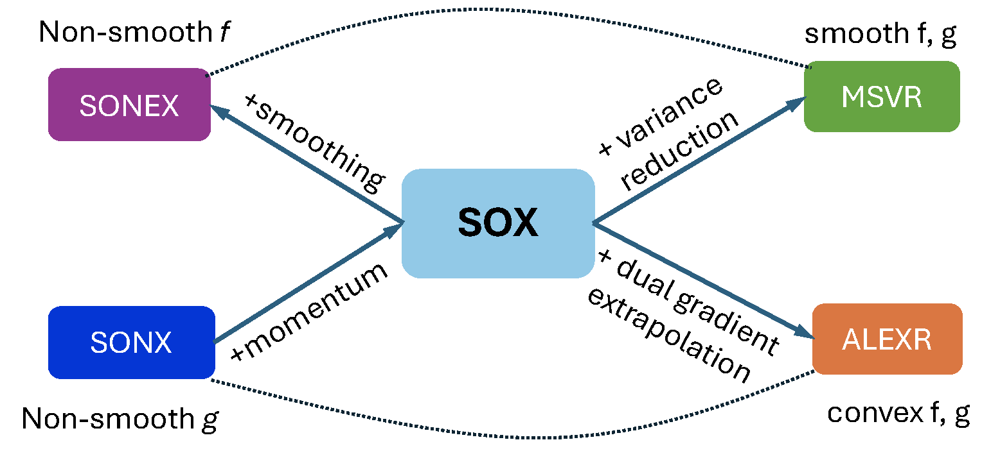
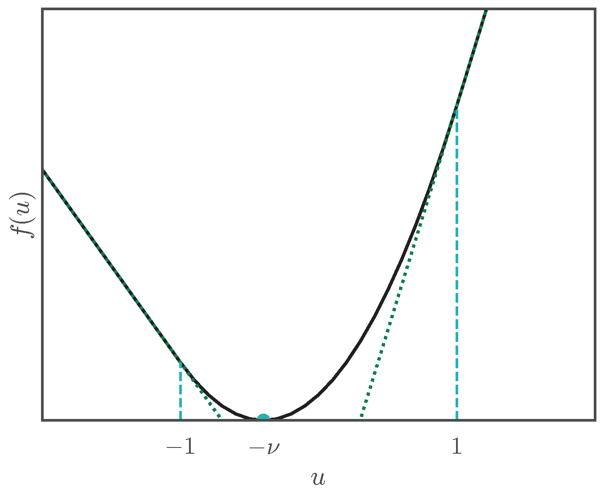
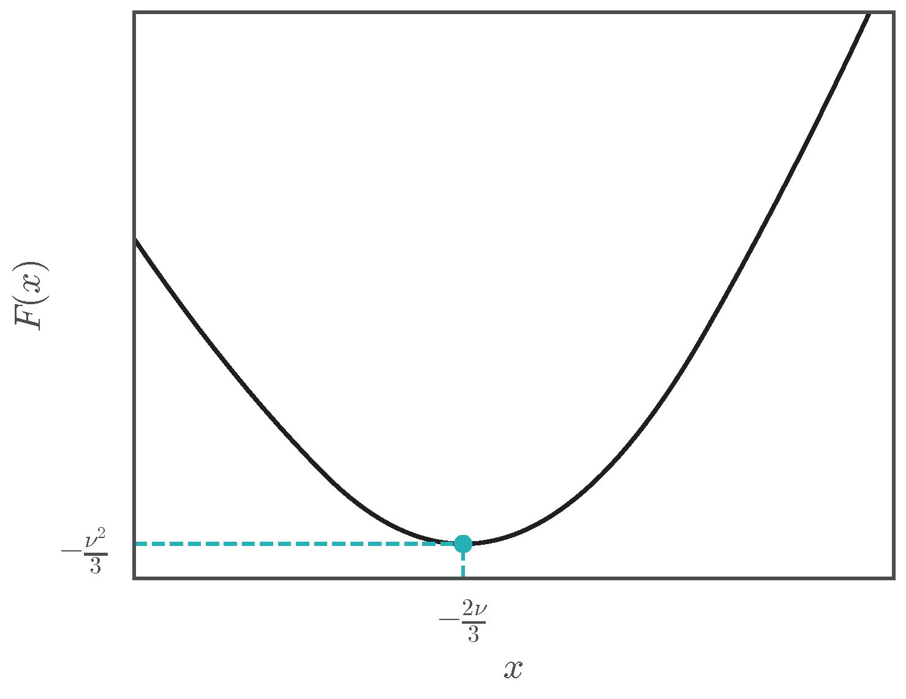

Section 5.4 Convex inner and outer functions
In Chapter 2, we discussed standard stochastic convex optimization and established the iteration complexities of various algorithms. For general convex problems, stochastic gradient descent (SGD) achieves a complexity of \(O(1/\epsilon^2)\), while for \(\mu\)-strongly convex problems, its complexity improves to \(O(1/(\mu\epsilon))\). These analyses rely on the assumption of unbiased stochastic gradient estimators, which does not hold for convex compositional optimization problems.
In this section, we introduce stochastic algorithms for a family of convex FCCO problems, where both the inner and outer functions are convex. We establish that these algorithms attain the same order of iteration complexities as SGD in standard stochastic convex optimization. In particular, let us consider a regularized convex FCCO:
\[\begin{align}\label{eqn:cfcco} \min_{\mathbf{w} \in \mathbb{R}^d} F(\mathbf{w}): = \frac{1}{n} \sum_{i=1}^n f_i(g_i(\mathbf{w})) + r(\mathbf{w}), \end{align}\]
where \(g_i(\mathbf{w}) =\mathbb{E}_{\zeta \sim \mathbb{P}_i} [g_i(\mathbf{w}; \zeta)]\), the outer and inner functions satisfy the following assumption.
Assumption 5.8
The following conditions hold:
\(f_i\) is convex, \(G_1\)-Lipschitz continuous, and \(\partial f_i(\cdot)\geq 0\).
\(g_i\) is convex and \(G_2\)-Lipschitz continuous.
\(r\) is \(\mu\)-strongly convex for some \(\mu\geq 0\).
Group DRO could satisfy the above assumption when the individual loss function is convex and Lipschitz with respect to the model parameter. Two-way partial AUC maximization considered in Section 6.4 is another example satisfying the above assumption when the loss function is convex and Lipschitz continuous.
Algorithm 18: ALEXR
- Input: learning rate schedules \(\{\eta_t\}_{t=1}^{T}\), \(\{\alpha_t\}_{t=1}^{T}, \theta\in[0,1]\); starting points \(\mathbf{w}_0\), \(\mathbf{y}_1 \in \mathcal{Y}_1\times\cdots\times\mathcal{Y}_n\)
- Let \(\mathbf{w}_1 = \mathbf{w}_0\)
- for \(t=1,\dotsc,T-1\) do
- Sample a batch \(\mathcal{B}_t\subset \{1,\dotsc,n\}\) with \(|\mathcal{B}_t| = B\)
- for each \(i\in\mathcal{S}_t\) do
- Draw a sample \(\zeta_{i,t}, \zeta'_{i,t}\sim \mathbb{P}_i\)
- Compute \(\tilde{g}_{i,t} = g_i(\mathbf{w}_t;\zeta_{i,t}) + \theta(g_i(\mathbf{w}_t; \zeta_{i,t}) - g_i(\mathbf{w}_{t-1};\zeta_{i,t}))\)
- Update \(y_{i,t+1} = \arg\max_{y_{i}\in\mathcal{Y}_i}\left\{y_{i}^{\top} \tilde{g}_{i,t} - f_i^*(y_{i}) - \frac{1}{\alpha_t} D_{\psi_i}(y_{i}, y_{i,t})\right\}\)
- end for
- For each \(i\notin \mathcal{B}_t\), \(y_{i,t+1} = y_{i,t}\)
- Compute the vanilla gradient estimator \(\mathbf{z}_t =\frac{1}{B}\sum_{i\in\mathcal{B}_t} [\partial g_i (\mathbf{w}_t;\zeta'_{i,t})]^\top y_{i,t+1}\)
- Update \(\mathbf{w}_{t+1} = \arg\min_{\mathbf{w}} \left\{\mathbf{z}_t^{\top}\mathbf{w} + \frac{1}{2\eta_t} \left\|\mathbf{w}-\mathbf{w}_t\right\|_2^2 + r(\mathbf{w})\right\}\)
- end for
Let \(f_i^*\) denote the convex conjugate of \(f_i\). We can write \(f_i(g_i(\mathbf{w}))\) as
\[f_i(g_i(\mathbf{w}))=\max_{y_i\in\mathcal{Y}_i}(y_i^{\top}g_i(\mathbf{w}) - f^*_i(y_i)),\]
where \(\mathcal{Y}_i = \text{dom}(f^*_1)\). Since \(0\leq \partial f_i(\cdot)\) and \(\| \partial f_i(\cdot)\|\leq G_1\), hence \(\mathcal{Y}_i\) is a compact set following from Lemma 1.8.
Then, we can convert (\(\ref{eqn:cfcco}\)) into an equivalent minimax optimization problem:
\[\begin{align}\label{eqn:cfcco-minmax} \min_{\mathbf{w} \in \mathbb{R}^d} \max_{\mathbf{y}\in\mathcal{Y}} \frac{1}{n} \sum_{i=1}^n (y_i^{\top}g_i(\mathbf{w}) - f^*_i(y_i)) + r(\mathbf{w}), \end{align}\]
where \(\mathbf{y}=(y_1,\ldots, y_n)^{\top}\), \(\mathcal{Y}=\mathcal{Y}_1\times \cdots \mathcal{Y}_n\). Thus, the above problem is convex-concave problem under Assumption 5.8.
There are several unique challenges: (i) updating all coordinates of \(\mathbf{y}\) is difficult because it is computationally prohibitive to traverse all data points \(i=1,\ldots,n\) at each iteration; (ii) we only have access to stochastic evaluations of the functions \(g_i(\mathbf{w};\zeta)\), which limits our ability to update both the corresponding coordinate of \(\mathbf{y}\) and the parameter \(\mathbf{w}\). Below, We introduce a method to optimize the above minimax problem.
5.4.1 The ALEXR Algorithm
To present the algorithm, we assume a strongly convex prox-function \(\psi_i\) for the \(i\)-th coordinate and impose the following conditions.
Assumption 5.9
Suppose \(\psi_i\) is differentiable and obeys the following conditions:
\(\psi_i\) is \(\mu_{\psi}\)-strongly convex with respect to \(\|\cdot\|_2\), i.e., \(\psi_i(y)\geq \psi_i(y') +\nabla \psi_i(y')^{\top}(y-y') + \frac{\mu_\psi}{2}\|y - y'\|_2^2\).
\(D_{f_i^*}(y, y')\geq \rho D_{\psi_i}(y, y')\) for some \(\rho\geq 0\).
The following proximal mapping can be easily computed for a given \(\tilde g_{i,t}\): \(y_{i,t+1} = \arg\max_{y_{i}\in\mathcal{Y}_i}\left\{y_{i}^{\top} \tilde{g}_{i,t} - f_i^*(y_{i}) - \frac{1}{\alpha_t} D_{\psi_i}(y_{i}, y_{i,t})\right\}\).
A meta-algorithm, termed ALEXR, is presented in Algorithm 18. ALEXR employs stochastic block-coordinate proximal mirror ascent to update \(\mathbf{y}\), using the prox-function \(\psi_i\) for the \(i\)-th coordinate, and applies stochastic proximal gradient descent to update \(\mathbf{w}\). Below, we consider different choices of the prox-functions \(\psi_i\) and the corresponding updates for \(y_{i,t+1}\).
ALEXR-v1 for smooth \(f_i\): using \(\psi_i=f_i^*\)
When \(f_i\) is \(L_1\)-smooth, its convex conjugate \(f_i^*\) is \(1/L_1\)-strongly convex. We can use \(\psi_i = f_i^*\) to define a Bregman divergence \(D_{\psi_i}(y, y') = D_{f_i^*}(y, y')\).
💡 Critical
In this case, Assumption 5.9 (i) and (ii) hold with \(\mu_\psi=1/L_1\), and \(\rho=1\).
Let us consider the update of \(y_{i,t+1}\), which becomes:
\[\begin{align}\label{eqn:y-alexr} y_{i,t+1} = \arg\max_{y_{i}\in\mathcal{Y}_i}\left\{y_{i}^{\top} \tilde{g}_{i,t} - f_i^*(y_{i}) - \frac{1}{\alpha_t} D_{f_i^*}(y_{i}, y_{i,t})\right\}, \forall i\in\mathcal{B}_t. \end{align}\]
The following lemma provides an efficient way to compute \(y_{i,t+1}\), which also builds the connection to the sequence of \(\mathbf{u}_{i,t}\) in SOX and MSVR.
Lemma 5.14
Let \(\mathbf{u}_{i,t-1} \in \partial f^*_i(y_{i,t})\). Then for \(i\in\mathcal{B}_t\) we have \(y_{i,t+1} = \nabla f_i(\mathbf{u}_{i,t})\), where \(\mathbf{u}_{i,t} =\frac{1}{1+\alpha_t}\mathbf{u}_{i,t-1} + \frac{\alpha_t}{1+\alpha_t} \tilde{g}_{i,t}\).
Proof.
For the problem (\(\ref{eqn:y-alexr}\)), we have
\[\begin{align*} & y_{i}^{\top} \tilde{g}_{i,t} - f_i^*(y_{i}) - \frac{1}{\alpha_t} D_{f_i^*}(y_{i}, y_{i,t})\\ &= y_{i}^{\top} \tilde{g}_{i,t} - f_i^*(y_{i}) - \frac{1}{\alpha_t}(f_i^*(y_{i}) - \partial f_i^*(y_{i,t})^{\top}(y_i - y_{i,t}) - f_i^*(y_{i,t}))\\ & = y_i^{\top}( \tilde{g}_{i,t} + \frac{1}{\alpha_t}\partial f_i^*(y_{i,t})) - (1+\frac{1}{\alpha_t}) f_i^*(y_{i}) - \frac{1}{\alpha_t}\partial f_i^*(y_{i,t})^{\top}y_{i,t} + \frac{1}{\alpha_t}f_i^*(y_{i,t}). \end{align*}\]
Hence \(y_{i,t+1}\in\arg\max_{y_{i}\in\mathcal{Y}_i}y_i^{\top}( \frac{\alpha_t}{1+\alpha_t}\tilde{g}_{i,t} + \frac{1}{1+\alpha_t}\partial f_i^*(y_{i,t})) - f_i^*(y_{i})\). If we define \(\mathbf{u}_{i,t} = \frac{\alpha_t}{1+\alpha_t}\tilde{g}_{i,t} + \frac{1}{1+\alpha_t}\partial f_i^*(y_{i,t})\), we have
\[f(\mathbf{u}_{i,t}) =\max_{y_{i}\in\mathcal{Y}_i}y_i^{\top}\mathbf{u}_{i,t} - f_i^*(y_{i}) = y_{i,t+1}^{\top}\mathbf{u}_{i,t} - f_i^*(y_{i,t+1}).\]
Hence, \(\mathbf{u}_{i,t}\in\arg\max_{\mathbf{u}} y_{i,t+1}^{\top}\mathbf{u} - f_i(\mathbf{u})\) and therefore \(y_{i,t+1}= \nabla f_i( \mathbf{u}_{i,t})\).
■
If \(f_i\) is a Legendre function such that \(\nabla f_i^{-1} = \nabla f_i^*\) (see Lemma 1.8), then we can derive the following equivalent update of \(\mathbf{u}\) sequence such that \(y_{i,t}=\nabla f_i(\mathbf{u}_{i,t-1})\).
\[\begin{align}\label{eqn:u-alexr} \mathbf{u}_{i,t} =\left\{ \begin{array}{ll}\frac{1}{1+\alpha_t}\mathbf{u}_{i,t-1} + \frac{\alpha_t}{1+\alpha_t} \tilde{g}_{i,t},& \text{ if } i\in\mathcal{B}_t\\ \mathbf{u}_{i,t-1} & \text{o.w.}\end{array}\right.. \end{align}\]
When \(\theta=0\), the equivalent \(\mathbf{u}\) update (\(\ref{eqn:u-alexr}\)) becomes:
\[\begin{align}\label{eqn:u-alexr-sox} \mathbf{u}_{i,t} = \left(1- \frac{\alpha_t }{1+\alpha_t}\right)\mathbf{u}_{i,t-1} + \frac{\alpha_t }{1+\alpha_t} g_i(\mathbf{w}_t; \zeta_{i,t}), \forall i\in\mathcal{B}_t. \end{align}\]
This is the same as the moving average estimator in SOX with \(\gamma_t =\alpha_t /(1+\alpha_t)\). Using the equivalent \(\mathbf{u}\) sequence, the stochastic gradient estimator becomes \(\mathbf{z}_t =\frac{1}{B}\sum_{i\in\mathcal{B}_t} [\partial g_i (\mathbf{x}_t;\zeta'_{i,t})]^\top \nabla f_i(\mathbf{u}_{i,t})\). If the regularizer \(r\) is not present, the update of the model parameter becomes \(\mathbf{w}_{t+1} = \mathbf{w}_t - \eta_t\mathbf{z}_t\). In this case, ALEXR with \(\theta=0\) is the same as SOX with \(\beta_t=1\). We will prove its convergence for convex and strongly convex regularizer \(r\).
When \(\theta>0\), the equivalent \(\mathbf{u}\) update (\(\ref{eqn:u-alexr}\)) becomes:
\[\begin{align}\label{eqn:u-alexr-msvr} \mathbf{u}_{i,t} = \left(1- \frac{\alpha_t }{1+\alpha_t}\right)\mathbf{u}_{i,t-1} + \frac{\alpha_t }{1+\alpha_t} g_i(\mathbf{w}_t; \zeta_{i,t}) + \frac{\theta \alpha_t }{1+\alpha_t}(g_{i}(\mathbf{w}_t; \zeta_t) - g_i(\mathbf{w}_{t-1}; \zeta_t)). \end{align}\]
This is similar to the MSVR estimator with \(\gamma_t = \frac{\alpha_t }{1+\alpha_t}\) and \(\gamma'_t = \frac{\theta \alpha_t }{1+\alpha_t}\). However, the key difference is that \(\gamma'_t\) in MSVR is larger than \(1\), while it is smaller than \(1\) in ALEXR for convex problems. In practice, setting \(\gamma'_t<1\) is a better choice. We will prove a better convergence of ALEXR with \(\theta\in(0,1)\) for a strongly convex \(r\).
ALEXR-v2 for non-smooth \(f_i\): using a quadratic function \(\psi_i(\cdot)\)
When \(f_i\) is non-smooth, we cannot use \(f_i^*\) as the prox function. In this case, we will use a smooth and strongly convex \(\psi_i\). A commonly used convex prox function that satisfies Assumption 5.9 is the quadratic function \(\psi_i(y) = \frac{1}{2}\|y\|_2^2\).
💡 Critical
In this case, Assumption 5.9 (i) holds with \(\mu_\psi=1\), and Assumption 5.9 (ii) holds with \(\rho=0\).
Example 5.2: Hinge loss update
For the update of \(y_{i,t+1}\), consider the example \(f_i(\cdot) = [\,\cdot\,]_+\), as used in GDRO and TPAUC maximization. In this case, the conjugate \(f_i^*(y)\) is the indicator function of the interval \([0,1]\). Consequently, \(y_{i,t+1}\) can be computed as:
\[\begin{align*} y_{i,t+1} = \arg\max_{y_{i}\in[0,1]}\left\{y_{i}^{\top} \tilde{g}_{i,t} - \frac{1}{2\alpha_t}(y_{i}- y_{i,t})^2\right\} = \Pi_{[0,1]}(y_{i,t} + \alpha_t \tilde{g}_{i,t}), \forall i\in\mathcal{B}_t, \end{align*}\]
where \(\Pi_{[0,1]}(\cdot)\) projects the input into the range of \([0,1]\).
5.4.2 Technical Lemmas
To facilitate the analysis, we define \((\mathbf{w}_*, \mathbf{y}_*)\) as the saddle point to the minimax problem and
\[\begin{align*} & F(\mathbf{w}, \mathbf{y}) = \frac{1}{n} \sum_{i=1}^n y_i^{\top}g_i(\mathbf{w}) - f^*_i(y_i) + r(\mathbf{w}),\\ &\tilde{g}_t = (\tilde{g}_{1,t},\dotsc, \tilde{g}_{n,t})^\top,\\ &\bar{y}_{i,t+1} = \arg\max_{y_{i}\in\mathcal{Y}_i}\left\{y_{i}^{\top} \tilde{g}_{i,t} - f_i^*(y_{i}) - \frac{1}{\alpha_t} D_{\psi_i}(y_{i},y_{i,t})\right\}, \forall i\in[n],\\ &D_{\psi}(\mathbf{y}, \mathbf{y}') = \sum_{i=1}^nD_{\psi_i}(y_i, y'_i). \end{align*}\]
Note that \(\bar{\mathbf{y}}_{t+1}\) is a virtual sequence, which is updated for all coordinates from \(\mathbf{y}_t\) making it independent of \(\mathcal{B}_t\).
We make the following assumption regarding the stochastic estimators.
Assumption 5.10
We assume that
\(\quad\mathbb{E}_{\zeta\sim\mathbb{P}_i}[\left\|g_i(\mathbf{w}; \zeta) - g_i(\mathbf{w})\right\|_2^2]\leq \sigma_0^2\).
\(\quad\mathbb{E}_{\zeta\sim\mathbb{P}_i}[\left\|\nabla g_i(\mathbf{w}; \zeta) - \nabla g_i(\mathbf{w})\right\|_2^2]\leq \sigma_2^2\).
\(\quad\mathbb{E}_{i\sim \mathbb{U}_n}\left[\left\|y_i\nabla g_i(\mathbf{w})- \frac{1}{n}\sum_{i=1}^ny_i\nabla g_i(\mathbf{w})\right\|_2^2\right] \leq \delta^2\) for any fixed \(\mathbf{y}\), where \(\mathbb{U}_n\) denotes a uniform distribution.
Lemma 5.15
The following holds for any \(\mathbf{w}, \mathbf{y}\in\mathcal{Y}\) after the \(t\)-th iteration of Algorithm 18.
\[\begin{align}\label{eq:starter_de} & F(\mathbf{w}_{t+1}, \mathbf{y}) - F(\mathbf{w},\bar{\mathbf{y}}_{t+1}) \\ &\leq \frac{1}{2\eta_t}\left\|\mathbf{w} - \mathbf{w}_t\right\|_2^2 -\left(\frac{1}{2\eta_t} + \frac{\mu}{2}\right)\left\|\mathbf{w} - \mathbf{w}_{t+1}\right\|_2^2- \frac{1}{2\eta_t}\left\|\mathbf{w}_{t+1} - \mathbf{w}_t\right\|_2^2\notag\\ & +A_t(\mathbf{y})+B_t(\mathbf{y})+C_t(\mathbf{w}),\notag \end{align}\]
where
\[\begin{align*} A_t(\mathbf{y})&=\frac{1}{n\alpha_t} D_\psi(\mathbf{y}, \mathbf{y}_t) -\left(\frac{1}{n\alpha_t}+\frac{\rho}{n}\right)D_\psi(\mathbf{y},\bar{\mathbf{y}}_{t+1}) - \frac{1}{n\alpha_t} D_\psi(\bar{\mathbf{y}}_{t+1},\mathbf{y}_t)\\ B_t(\mathbf{y})&=\frac{1}{n}\sum_{i=1}^n (g_i(\mathbf{w}_{t+1}) - \tilde{g}_{i,t})^{\top}(y_{i}-\bar{y}_{i,t+1})\\ C_t(\mathbf{w})&= \frac{1}{n} \sum_{i=1}^n (g_i(\mathbf{w}_{t+1}) - g_i(\mathbf{w}))^{\top}\bar{y}_{i,t+1} - \mathbf{z}_t^{\top}(\mathbf{w}_{t+1} - \mathbf{w}). \end{align*}\]
Proof.
Following Lemma 3.11, for all \(i\in [n]\) the dual update rule implies that for any \(y\in\mathcal{Y}\) it holds
\[\begin{align*} &(g_i(\mathbf{w}_{t+1}) - \tilde{g}_{i,t})^{\top}(y_{i}-\bar{y}_{i,t+1}) + f_i^*(\bar{y}_{i,t+1}) - f_i^*(y_{i}) \\ &\leq \frac{1}{\alpha_t} D_{\psi_i}(y_{i},y_{i,t}) -\left(\frac{1}{\alpha_t} + \rho\right) D_{\psi_i}(y_{i},\bar{y}_{i,t+1}) - \frac{1}{\alpha_t} D_{\psi_i}(\bar{y}_{i,t+1}, y_{i,t}). \end{align*}\]
Averaging this inequality over \(i=1,\dotsc, n\):
\[\begin{align}\label{eq:3p_dual} \frac{1}{n} \sum_{i=1}^n &(g_i(\mathbf{w}_{t+1}) - \tilde{g}_{i,t})^{\top}(y_{i,t} - \bar{y}_{i,t+1}) + \frac{1}{n} \sum_{i=1}^n f_i^*(\bar{y}_{i,t+1}) - \frac{1}{n}\sum_{i=1}^n f_i^*(y_{i})\\ &\leq \frac{1}{n\alpha_t} D_\psi(\mathbf{y}, \mathbf{y}_t) -\left(\frac{1}{n\alpha_t}+\frac{\rho}{n}\right)D_\psi(\mathbf{y},\bar{\mathbf{y}}_{t+1}) - \frac{1}{n\alpha_t} D_\psi(\bar{\mathbf{y}}_{t+1},\mathbf{y}_t).\notag \end{align}\]
According to Lemma 3.6, the primal update rule implies that
\[\begin{align}\label{eq:3p_primal} &\mathbf{z}_t^{\top}(\mathbf{w}_{t+1} - \mathbf{w}) + r(\mathbf{w}_{t+1}) - r(\mathbf{w}) \\ &\leq \frac{1}{2\eta_t}\left\|\mathbf{w} - \mathbf{w}_t\right\|_2^2 -\left(\frac{1}{2\eta_t} + \frac{\mu}{2}\right)\left\|\mathbf{w} - \mathbf{w}_{t+1}\right\|_2^2- \frac{1}{2\eta_t}\left\|\mathbf{w}_{t+1} - \mathbf{w}_t\right\|_2^2.\notag \end{align}\]
By the definition of \(F(\mathbf{w},\mathbf{y})\), we have
\[\begin{align*} & F(\mathbf{w}_{t+1}, \mathbf{y}) - F(\mathbf{w}, \bar{\mathbf{y}}_{t+1}) \\ &= \frac{1}{n} \sum_{i=1}^n y_{i}^{\top}g_i(\mathbf{w}_{t+1}) - \frac{1}{n}\sum_{i=1}^n f_i^*(y_{i}) + r(\mathbf{w}_{t+1}) - \frac{1}{n}\sum_{i=1}^n \bar{y}_{i,t+1}^{\top}g_i(\mathbf{w})\\ &+ \frac{1}{n}\sum_{i=1}^n f_i^*(\bar{y}_{i,t+1}) - r(\mathbf{w})\\ & = \frac{1}{n}\sum_{i=1}^n g_i(\mathbf{w}_{t+1})^{\top}(y_{i} - \bar{y}_{i,t+1}) + \frac{1}{n}\sum_{i=1}^n f_i^*(\bar{y}_{i,t+1}) - \frac{1}{n}\sum_{i=1}^n f_i^*(y_{i}) \\ &+ \frac{1}{n} \sum_{i=1}^n (g_i(\mathbf{w}_{t+1}) - g_i(\mathbf{w}))^{\top}\bar{y}_{i,t+1} + r(\mathbf{w}_{t+1}) - r(\mathbf{w}). \end{align*}\]
Combining the equation above with (\(\ref{eq:3p_primal}\)) and (\(\ref{eq:3p_dual}\)), we can finish the proof.
■
Next, we bound the three terms \(A_t(\mathbf{y}), B_t(\mathbf{y}), C_t(\mathbf{w})\) separately.
Lemma 5.16
Let \(\tau_t=1/\alpha_t\). For \(\mathbf{y}\) that possibly depends on all randomness in the algorithm and any \(\lambda_0>0\), we have
\[\begin{align}\label{eq:triangle_de} &\mathbb{E}[A_t(\mathbf{y})]=\mathbb{E}\left[\frac{\tau_t}{n} D_\psi(\mathbf{y},\mathbf{y}_t) -\frac{\tau_t+\rho}{n} D_\psi(\mathbf{y},\bar{\mathbf{y}}_{t+1}) - \frac{\tau_t}{n} D_\psi(\bar{\mathbf{y}}_{t+1}, \mathbf{y}_t) \right] \\ & \leq \mathbb{E}\left[\frac{\tau_t + \rho\left(1- \frac{B}{n}\right)}{B} D_\psi(\mathbf{y},\mathbf{y}_t) - \frac{\tau_t+\rho}{B} D_\psi(\mathbf{y},\mathbf{y}_{t+1}) \right]- \frac{\tau_t}{n} \mathbb{E}\left[D_\psi(\bar{\mathbf{y}}_{t+1}, \mathbf{y}_t)\right]\notag\\ & + \mathbb{E}\left[\frac{\lambda_0(\tau_t+\rho) }{n} (D_\psi(\mathbf{y},\hat{\mathbf{y}}_t) - D_\psi(\mathbf{y},\hat{\mathbf{y}}_{t+1})) \right]\notag\\ &+ \frac{(n-B)(\tau_t+\rho)}{2 \mu_\psi \lambda_0 nB} \mathbb{E}\left[\sum_{i=1}^n\left\|\nabla\psi_i(\bar{y}_{i,t+1}) - \nabla\psi_i(y_{i,t})\right\|_2^2\right], \nonumber \end{align}\]
where the sequence \(\{\hat{\mathbf{y}}_t\}_t, \hat{\mathbf{y}}_t \in \mathcal{Y}\) is virtual. In addition, for \(\mathbf{y}=\mathbf{y}_*\), we have
\[\begin{align}\label{eq:triangle_de_sc} &\mathbb{E}[A_t(\mathbf{y}_*)]=\mathbb{E}\left[\frac{\tau_t}{n} D_\psi(\mathbf{y}_*,\mathbf{y}_t) -\frac{\tau_t+\rho}{n} D_\psi(\mathbf{y}_*,\bar{\mathbf{y}}_{t+1}) - \frac{\tau_t}{n} D_\psi(\bar{\mathbf{y}}_{t+1}, \mathbf{y}_t) \right] \\ & \leq \mathbb{E}\left[\frac{\tau_t + \rho\left(1- \frac{B}{n}\right)}{B} D_\psi(\mathbf{y}_*,\mathbf{y}_t) - \frac{\tau_t+\rho}{B} D_\psi(\mathbf{y}_*,\mathbf{y}_{t+1}) \right]- \frac{\tau_t}{n} \mathbb{E}\left[D_\psi(\bar{\mathbf{y}}_{t+1}, \mathbf{y}_t)\right].\notag \end{align}\]
Proof.
\[\begin{align}\label{eq:dual_decomp} & \frac{\tau_t}{n} D_\psi(\mathbf{y},\mathbf{y}_t) -\frac{\tau_t+\rho}{n} D_\psi(\mathbf{y},\bar{\mathbf{y}}_{t+1}) - \frac{\tau_t}{n} D_\psi(\bar{\mathbf{y}}_{t+1}, \mathbf{y}_t) \\\nonumber & = \frac{\tau_t + \rho\left(1- \frac{B}{n}\right)}{B} D_\psi(\mathbf{y},\mathbf{y}_t) - \frac{\tau_t+\rho}{B} D_\psi(\mathbf{y},\mathbf{y}_{t+1}) -\frac{\tau_t}{n} D_\psi(\bar{\mathbf{y}}_{t+1},\mathbf{y}_t) \\ &+ \left(\frac{\tau_t+\rho}{B} D_\psi(\mathbf{y},\mathbf{y}_{t+1}) - \frac{\tau_t+\rho}{n} D_\psi(\mathbf{y},\bar{\mathbf{y}}_{t+1}) + \frac{(B-n)(\tau_t+\rho)}{n B} D_\psi(\mathbf{y},\mathbf{y}_t)\right).\notag \end{align}\]
For bounding the last three terms, we consider the following:
\[\begin{align}\label{eqn:dpsii} & \frac{1}{B} D_{\psi_i}(y_i,y_{i,t+1}) - \frac{1}{n} D_{\psi_i}(y_i,\bar{y}_{i,t+1}) + \frac{(B-n)}{n B} D_{\psi_i}(y_i, y_{i,t})\\ & = \frac{1}{B} \left(\psi_i(y_{i}) - \psi_i(y_{i,t+1}) - \nabla\psi_i(y_{i,t+1})^{\top}(y_{i}-y_{i,t+1})\right) \notag\\ &- \frac{1}{n} \left(\psi_i(y_{i}) - \psi_i(\bar{y}_{i,t+1}) - \nabla\psi_i(\bar{y}_{i,t+1})^{\top}(y_{i} - \bar{y}_{i,t+1})\right)\notag\\ & + \frac{(B-n)}{n B} \left(\psi_i(y_{i}) - \psi_i(y_{i,t}) - \nabla\psi_i(y_{i,t})^{\top}(y_{i}-y_{i,t})\right)\notag\\ & = \left[\frac{1}{n} \left(\psi_i(\bar{y}_{i,t+1}) - \frac{n}{B} \psi_i(y_{i,t+1}) + \frac{n-B}{B}\psi_i(y_{i,t})\right)\right] \notag\\ & +\left[ \frac{1}{B} \nabla\psi_i(y_{i,t+1})^{\top}y_{i,t+1} - \frac{1}{n}\nabla\psi_i(\bar{y}_{i,t+1})^{\top}\bar{y}_{i,t+1} + \frac{(B-n)}{n B} \nabla\psi_i(y_{i,t})^{\top}y_{i,t}\right]\notag\\ &+ \underbrace{\frac{1}{n}\left(-\frac{n}{B} \nabla\psi_i(y_{i,t+1}) + \nabla\psi_i(\bar{y}_{i,t+1}) + \frac{n-B}{B} \nabla\psi_i(y_{i,t})\right)^{\top}y_{i}}_{\sharp}.\notag \end{align}\]
Taking expectation over \(\mathcal{B}_t\) for the first two terms in the brackets of the above bound will give zeros. This is because both \(\bar{y}_{i,t+1}\) and \(y_{i,t}\) are independent of \(\mathcal{B}_t\) such that
\[\begin{align*} & \mathbb{E}_{\mathcal{B}_t}[\psi_i(y_{i,t+1})] = \frac{B}{n} \psi_i(\bar{y}_{i,t+1}) + \frac{n-B}{n}\psi_i(y_{i,t}),\\ & \mathbb{E}_{\mathcal{B}_t}\left[\nabla\psi_i(y_{i,t+1})^{\top}y_{i,t+1}\right] = \frac{B}{n} \nabla\psi_i(\bar{y}_{i,t+1})^{\top}\bar{y}_{i,t+1} + \frac{n-B}{n} \nabla\psi_i(y_{i,t})^{\top}y_{i,t},\\ & \mathbb{E}_{\mathcal{B}_t}\left[\nabla\psi_i(y_{i,t+1})\right] = \frac{B}{n}\nabla\psi_i(\bar{y}_{i,t+1}) + \frac{n-B}{n} \nabla\psi_i(y_{i,t}). \end{align*}\]
Next, we bound the \(\sharp\) term. When \(\mathbf{y}=\mathbf{y}_*\), expectation of \(\sharp\) is also zero which proves (\(\ref{eq:triangle_de_sc}\)).
When \(\mathbf{y}\) is possibly random, let us apply Lemma 3.14 to the update \(\hat{y}_{i,t+1} = \arg\min_{v} -\Delta_{i,t}^{\top}v + \lambda_0 D_{\psi_i}(v,\hat{y}_{i,t}),\forall i\) (\(\lambda_0\) to be determined), where
\[\Delta_{i,t} \coloneqq -\frac{n}{B} \nabla\psi_i(y_{i,t+1}) + \nabla\psi_i(\bar{y}_{i,t+1}) + \frac{n-B}{B} \nabla\psi_i(y_{i,t})\]
is a martingale sequence due to
\[\mathbb{E}_{\mathcal{B}_t}[(\nabla\psi_i(y_{i,t+1}) - \nabla\psi_i(y_{i,t}))] = \frac{B}{n}(\nabla\psi_i(\bar{y}_{i,t+1}) - \nabla\psi_i(y_{i,t})).\]
We have
\[\begin{align*} \mathbb{E}[\sharp] \leq \mathbb{E}\left[\frac{\lambda_0}{n} (D_{\psi_i}(y_i,\hat{y}_{i,t}) - D_{\psi_i}(y_i,\hat{y}_{i, t+1}))\right] + \frac{1}{2n \mu_\psi \lambda_0} \mathbb{E}\left[ \left\|\Delta_{i,t}\right\|_2^2\right]. \end{align*}\]
Note that \(\mathbb{E}_{\mathcal{B}_t}[(\nabla\psi_i(y_{i,t+1}) - \nabla\psi_i(y_{i,t}))] = \frac{B}{n}(\nabla\psi_i(\bar{y}_{i,t+1}) - \nabla\psi_i(y_{i,t}))\) such that
\[\begin{align*} \mathbb{E}_{\mathcal{B}_t}\left[\left\|\Delta_{i,t}\right\|_2^2\right] & = \mathbb{E}_{\mathcal{B}_t}\left\|(\nabla\psi_i(\bar{y}_{i,t+1}) - \nabla\psi_i(y_{i,t})) - \frac{n}{B}(\nabla\psi_i(y_{i,t+1}) - \nabla\psi_i(y_{i,t}))\right\|_2^2\\ & \leq \frac{n^2}{B^2}\mathbb{E}_{\mathcal{B}_t}\left\|\nabla\psi_i(y_{i,t+1}) - \nabla\psi_i(y_{i,t})\right\|_2^2 - \left\|(\nabla\psi_i(\bar{y}_{i,t+1}) - \nabla\psi_i(y_{i,t}))\right\|_2^2\\ & \leq \frac{n}{B}\left\|\nabla\psi_i(\bar{y}_{i,t+1}) - \nabla\psi_i(y_{i,t})\right\|_2^2 - \left\|(\nabla\psi_i(\bar{y}_{i,t+1}) - \nabla\psi_i(y_{i,t}))\right\|_2^2. \end{align*}\]
Thus, we have
\[\begin{align*} \mathbb{E}[\sharp]& \leq \mathbb{E}\left[\frac{\lambda_0}{n} (D_{\psi_i}(y_i,\hat{y}_{i,t}) - D_{\psi_i}(y_i,\hat{y}_{i,t+1}))\right]\\ & + \frac{n-B}{2 \mu_\psi \lambda_0 nB} \mathbb{E}\left[\left\|\nabla\psi_i(\bar{y}_{i,t+1}) - \nabla\psi_i(y_{i,t})\right\|_2^2\right]. \end{align*}\]
Averaging (\(\ref{eqn:dpsii}\)) multiplied by \(\tau_t+\rho\) and combining (\(\ref{eq:dual_decomp}\)) finishes the proof.
■
Lemma 5.17
Suppose \(\psi_i\) is \(\mu_\psi\)-strongly convex. For any \(\lambda_2,\lambda_3, \lambda_4, \lambda_5 >0\) and \(\mathbf{y}\) that possibly depends on all randomness in the algorithm, we have
\[\begin{align}\label{eq:diamond_de} & \mathbb{E}[B_t(\mathbf{y})]=\frac{1}{n}\sum_{i=1}^n\mathbb{E} (g_i(\mathbf{w}_{t+1}) - \tilde{g}_{i,t})^{\top}(y_{i}- \bar{y}_{i,t+1}) \leq \mathbb{E}[\Gamma_{t+1} - \theta\Gamma_t]\\ & + \frac{( \lambda_3 + \lambda_4\theta) \mathbb{E}[D_\psi(\bar{\mathbf{y}}_{t+1},\mathbf{y}_t)]}{\mu_\psi n} + \frac{G_2^2 \mathbb{E}\left\|\mathbf{w}_{t+1} - \mathbf{w}_t\right\|_2^2}{2\lambda_3} + \frac{G_2^2\theta \mathbb{E} \left\|\mathbf{w}_t - \mathbf{w}_{t-1}\right\|_2^2}{2\lambda_4}\notag \\ &+\frac{(1+3.5\theta+3.5\theta^2)\sigma_0^2\alpha_t}{\mu_\psi}+\frac{(1+\theta)\lambda_2\sigma_0^2}{2\mu_\psi} +\frac{\theta\sigma_0^2\lambda_5}{2\mu_\psi}\notag\\ &+ \frac{1+\theta}{n\lambda_2}\mathbb{E}[D_\psi(\mathbf{y},\tilde{\mathbf{y}}_t) - D_\psi(\mathbf{y},\tilde{\mathbf{y}}_{t+1})] + \frac{\theta}{n\lambda_5}\mathbb{E}[D_\psi(\mathbf{y},\breve{\mathbf{y}}_t) - D_\psi(\mathbf{y},\breve{\mathbf{y}}_{t+1})]\notag, \end{align}\]
where \(\Gamma_t\coloneqq \frac{1}{n} \sum_{i=1}^n (g_i(\mathbf{w}_t) - g_i(\mathbf{w}_{t-1}))^{\top}(y_{i}-y_{i,t})\) and \(\breve{\mathbf{y}}_{t}, \tilde{\mathbf{y}}_t\) are some virtual sequences. In addition, we have
\[\begin{align}\label{eq:diamond_de_sc} & \mathbb{E}[B_t(\mathbf{y}_*)]= \frac{1}{n}\sum_{i=1}^n\mathbb{E} (g_i(\mathbf{w}_{t+1}) - \tilde{g}_{i,t})^{\top}(y_{i,*}- \bar{y}_{i,t+1}) \leq \mathbb{E}[\Gamma^*_{t+1} - \theta\Gamma^*_t]\\ & + \frac{( \lambda_3 + \lambda_4\theta) \mathbb{E}[D_\psi(\bar{\mathbf{y}}_{t+1},\mathbf{y}_t)]}{\mu_\psi n} + \frac{G_2^2 \mathbb{E}\left\|\mathbf{w}_{t+1} - \mathbf{w}_t\right\|_2^2}{2\lambda_3} + \frac{G_2^2\theta \mathbb{E} \left\|\mathbf{w}_t - \mathbf{w}_{t-1}\right\|_2^2}{2\lambda_4}\notag \\ &+\frac{(1+3.5\theta+3.5\theta^2)\sigma_0^2\alpha_t}{\mu_\psi}\notag, \end{align}\]
where \(\Gamma^*_t\coloneqq \frac{1}{n} \sum_{i=1}^n (g_i(\mathbf{w}_t) - g_i(\mathbf{w}_{t-1}))^{\top}(y_{i,*}-y_{i,t})\).
Proof.
Since \(\tilde{g}_{i,t} = g_i(\mathbf{w}_t;\zeta_{i,t}) + \theta(g_i(\mathbf{w}_t; \zeta_{i,t}) - g_i(\mathbf{w}_{t-1};\zeta_{i,t}))\), we have
\[\begin{align}\label{eq:diamond_de_starter} &\frac{1}{n}\sum_{i=1}^n (g_i(\mathbf{w}_{t+1}) - \tilde{g}_{i,t})^{\top}(y_{i}-\bar{y}_{i,t+1})\\ & = \underbrace{\frac{1+\theta}{n} \sum_{i=1}^n (g_i(\mathbf{w}_t) - g_i(\mathbf{w}_t;\zeta_{i,t}))^{\top}(y_{i}-\bar{y}_{i,t+1})}_{\text{I}} \notag\\ &+ \underbrace{\frac{\theta}{n}\sum_{i=1}^n (g_i(\mathbf{w}_{t-1};\zeta_{i,t}) - g_i(\mathbf{w}_{t-1}))^{\top}(y_{i}-\bar{y}_{i,t+1})}_{\text{II}}\notag\\ &+ \underbrace{\frac{1}{n} \sum_{i=1}^n ((g_i(\mathbf{w}_{t+1}) - g_i(\mathbf{w}_t)) + \theta(g_i(\mathbf{w}_{t-1}) - g_i(\mathbf{w}_t)))^{\top}(y_{i}-\bar{y}_{i,t+1})}_{\text{III}}. \nonumber \end{align}\]
Define \(\dot{y}_{i,t+1}\coloneqq \arg\max_{v\in\mathcal{Y}_i}\{v^{\top}((1+\theta)g_i(\mathbf{w}_t) - \theta g_i(\mathbf{w}_{t-1})) - f_i^*(v) - \frac{1}{\alpha_t} D_{\psi_i}(v,y_{i,t})\}, \forall i \in[n].\) This update differs from that of \(\bar{y}_{i,t+1}\) in that it uses full gradients instead of stochastic gradients. We decompose the I term in (\(\ref{eq:diamond_de_starter}\)) as
\[\begin{align*} & \text{I} = \frac{1+\theta}{n}\sum_{i=1}^n (g_i(\mathbf{w}_t) - g_i(\mathbf{w}_t;\zeta_{i,t}))^{\top}(y_{i} - \bar{y}_{i,t+1})\\ & = \underbrace{\frac{1+\theta}{n} \sum_{i=1}^n (g_i(\mathbf{w}_t) - g_i(\mathbf{w}_t;\zeta_{i,t}))^{\top}(\dot{y}_{i,t+1} - \bar{y}_{i,t+1})}_{\text{I}_1} \\ &+ \underbrace{\frac{1+\theta}{n}\sum_{i=1}^n (g_i(\mathbf{w}_t) - g_i(\mathbf{w}_t;\zeta_{i,t}))^{\top}y_{i}}_{\text{I}_2} - \underbrace{\frac{1+\theta}{n}\sum_{i=1}^n (g_i(\mathbf{w}_t) - g_i(\mathbf{w}_t;\zeta_{i,t}))^{\top}\dot{y}_{i,t+1}}_{\text{I}_3}. \end{align*}\]
Taking expectation over \(\zeta_{i,t},\forall i\) will make \(\mathbb{E}_{\zeta_t}[\text{I}_3]=0\). Below, we will bound \(\text{I}_1\) and \(\text{I}_2\).
\[\begin{align*} & \text{I}_1\leq \frac{1+\theta}{n}\sum_{i=1}^n \left\|g_i(\mathbf{w}_t) - g_i(\mathbf{w}_t;\zeta_{i,t})\right\|_2\left\|\dot{y}_{i,t+1} - \bar{y}_{i,t+1}\right\|_2. \end{align*}\]
Since \(D_{\psi_i}(y_{i},y_{i,t})\) is \(\mu_\psi\)-strongly convex, Lemma 3.9 implies that
\[\begin{align*} &\|\dot{y}_{i,t+1} - \bar{y}_{i,t+1}\|_2\\ &\leq \frac{\alpha_t}{\mu_\psi}\left((1+\theta)\left\|g_i(\mathbf{w}_t) - g_i(\mathbf{w}_t;\zeta_{i,t})\right\|_2 + \theta \left\|g_i(\mathbf{w}_{t-1}) - g_i(\mathbf{w}_{t-1};\zeta_{i,t})\right\|_2\right). \end{align*}\]
Hence
\[\begin{align}\label{eq:diamond_de_starter_I1} &\mathbb{E}_{\zeta_t}[\text{I}_1]\leq \frac{(1+\theta)\alpha_t}{n \mu_\psi}\cdot\notag\\ &\sum_{i=1}^n \mathbb{E}\left[(1+1.5\theta)\left\|g_i(\mathbf{w}_t) - g_i(\mathbf{w}_t;\zeta_{i,t})\right\|_2^2 + 0.5\theta \left\|g_i(\mathbf{w}_{t-1}) - g_i(\mathbf{w}_{t-1};\zeta_{i,t})\right\|_2^2\right]\notag\\ &\leq \frac{(1+\theta)(1+2\theta)\sigma_0^2\alpha_t}{\mu_\psi}. \end{align}\]
Next, let us handle \(\text{I}_2\). Let us define an auxiliary sequence \(\{\tilde{\mathbf{y}}_t\}_{t\geq 1}\),
\[\tilde{y}_{i,t+1} = \arg\min_{v\in\mathcal{Y}_i} \{(g_i(\mathbf{w}_t;\zeta_{i,t}) - g_i(\mathbf{w}_t))^{\top}v + \frac{1}{\lambda_2} D_{\psi_i}(v,\tilde{y}_{i,t})\},\]
where \(\lambda_2>0\). Lemma 3.14 implies that
\[( g_i(\mathbf{w}_t) - g_i(\mathbf{w}_t;\zeta_{i,t}))^{\top}y_{i}\leq \frac{1}{\lambda_2}\mathbb{E}[D_{\psi_i}(y_i,\tilde{y}_{i,t}) - D_{\psi_i}(y_i,\tilde{y}_{i, t+1})]+\frac{\lambda_2\sigma_0^2}{2\mu_\psi}.\]
Averaging over \(i=1,\ldots, n\) and multiplying \((1+\theta)\) yields a bound of \(\text{I}_2\):
\[\begin{align*} &\mathbb{E}[\text{I}_2]\leq \frac{1+\theta}{n\lambda_2}\mathbb{E}[D_\psi(\mathbf{y},\tilde{\mathbf{y}}_t) - D_\psi(\mathbf{y},\tilde{\mathbf{y}}_{t+1})]+\frac{(1+\theta)\lambda_2\sigma_0^2}{2\mu_\psi}. \end{align*}\]
As a result, the I term in (\(\ref{eq:diamond_de_starter}\)) can be bounded as
\[\begin{align}\label{eq:diamond_I} \mathbb{E}[\text{I}] & \leq \frac{1+\theta}{n\lambda_2}\mathbb{E}[D_\psi(\mathbf{y},\tilde{\mathbf{y}}_t) - D_\psi(\mathbf{y},\tilde{\mathbf{y}}_{t+1})]+\frac{(1+\theta)\lambda_2\sigma_0^2}{2\mu_\psi} +\frac{(1+\theta)(1+2\theta)\sigma_0^2\alpha_t}{\mu_\psi}. \end{align}\]
Similarly, the II term in (\(\ref{eq:diamond_de_starter}\)) can be bounded as
\[\begin{align}\label{eq:diamond_IV} \mathbb{E}[\text{II}] & \leq \frac{\theta}{n\lambda_5}\mathbb{E}[D_\psi(\mathbf{y},\breve{\mathbf{y}}_t) - D_\psi(\mathbf{y},\breve{\mathbf{y}}_{t+1})] + \frac{\theta\lambda_5\sigma_0^2}{2\mu_\psi} + \frac{\theta(0.5+1.5\theta)\sigma_0^2\alpha_t}{\mu_\psi}, \end{align}\]
where \(\breve{y}_{i,t+1} = \arg\min_{v\in\mathcal{Y}_i} \{( g_i(\mathbf{w}_{t-1}) - g_i(\mathbf{w}_{t-1};\zeta_{i,t}))^{\top}v + \lambda_5 D_{\psi_i}(v,\breve{y}_{i,t})\},\forall i.\)
Next, let us bound III. Recall \(\Gamma_t\coloneqq \frac{1}{n} \sum_{i=1}^n (g_i(\mathbf{w}_t) - g_i(\mathbf{w}_{t-1}))^{\top}(y_{i}-y_{i,t})\). For any \(\lambda_3, \lambda_4>0\), III can be rewritten as
\[\begin{align*} &\text{III} = \Gamma_{t+1} - \theta \Gamma_t + \frac{1}{n} \sum_{i=1}^n (g_i(\mathbf{w}_{t+1}) - g_i(\mathbf{w}_t))^{\top}(y_{i,t+1}-\bar{y}_{i,t+1})\\ & - \frac{\theta}{n}\sum_{i=1}^n (g_i(\mathbf{w}_t) - g_i(\mathbf{w}_{t-1}))^{\top}(y_{i,t} - \bar{y}_{i,t+1})\\ & \leq \Gamma_{t+1} - \theta\Gamma_t + \frac{G_2^2 \left\|\mathbf{w}_{t+1} - \mathbf{w}_t\right\|_2^2}{2\lambda_3} + \frac{\lambda_3\left\|\mathbf{y}_{t+1} - \bar{\mathbf{y}}_{t+1}\right\|_2^2}{2 n} \\ &+ \frac{G_2^2\theta \left\|\mathbf{w}_t - \mathbf{w}_{t-1}\right\|_2^2}{2\lambda_4} + \frac{\lambda_4\theta\left\|\mathbf{y}_t - \bar{\mathbf{y}}_{t+1}\right\|_2^2}{2 n}. \end{align*}\]
Note that \(y_{i,t+1} = \bar{y}_{i,t+1}\) if \(i\in \mathcal{B}_t\) and \(y_{i,t+1} = y_{i,t}\) otherwise. Then, \(\left\|\mathbf{y}_{t+1} - \bar{\mathbf{y}}_{t+1}\right\|_2^2 \leq \left\|\mathbf{y}_t - \bar{\mathbf{y}}_{t+1}\right\|_2^2\) such that
\[\begin{align}\label{eq:diamond_II-III} \text{III} &\leq \Gamma_{t+1} - \theta\Gamma_t + \frac{G_2^2 \left\|\mathbf{w}_{t+1} - \mathbf{w}_t\right\|_2^2}{2\lambda_3} + \frac{G_2^2\theta \left\|\mathbf{w}_t - \mathbf{w}_{t-1}\right\|_2^2}{2\lambda_4} \\ &+ \frac{(\lambda_3 + \lambda_4\theta)D_\psi(\bar{\mathbf{y}}_{t+1},\mathbf{y}_t)}{\mu_\psi n }.\notag \end{align}\]
Combining (\(\ref{eq:diamond_I}\)), (\(\ref{eq:diamond_II-III}\)), (\(\ref{eq:diamond_IV}\)), we have
\[\begin{align*} & \mathbb{E}[B_t(\mathbf{y})] \leq \mathbb{E}[\Gamma_{t+1} - \theta\Gamma_t]\\ &+ \frac{1+\theta}{n\lambda_2}\mathbb{E}[D_\psi(\mathbf{y},\tilde{\mathbf{y}}_t) - D_\psi(\mathbf{y},\tilde{\mathbf{y}}_{t+1})] + \frac{\theta}{n\lambda_5}\mathbb{E}[D_\psi(\mathbf{y},\breve{\mathbf{y}}_t) - D_\psi(\mathbf{y},\breve{\mathbf{y}}_{t+1})] \\ & + \frac{( \lambda_3 + \lambda_4\theta) \mathbb{E}[D_\psi(\bar{\mathbf{y}}_{t+1},\mathbf{y}_t)]}{\mu_\psi n} + \frac{G_2^2 \mathbb{E}\left\|\mathbf{w}_{t+1} - \mathbf{w}_t\right\|_2^2}{2\lambda_3} + \frac{G_2^2\theta \mathbb{E} \left\|\mathbf{w}_t - \mathbf{w}_{t-1}\right\|_2^2}{2\lambda_4} \\ & +\frac{(1+\theta)\lambda_2\sigma_0^2}{2\mu_\psi} +\frac{\theta\sigma_0^2\lambda_5}{2\mu_\psi}+\frac{(1+3.5\theta+3.5\theta^2)\sigma_0^2\alpha_t}{\mu_\psi}. \end{align*}\]
■
Lemma 5.18
When \(\theta=0\), for any \(\lambda_2, \lambda_4\geq0\) and \(\mathbf{y}\) that possibly depends on all randomness in the algorithm, we have
\[\begin{align} &\mathbb{E}[B_t(\mathbf{y})]=\frac{1}{n}\sum_{i=1}^n \mathbb{E}(g_i(\mathbf{w}_{t+1}) - \tilde{g}_t)^{\top}(y_{i} - \bar{y}_{i,t+1}) \leq\frac{ G_2^2\mathbb{E}\left[\left\|\mathbf{w}_{t+1} - \mathbf{w}_t\right\|_2^2\right]}{4\lambda_4} + 4\lambda_4 G_1^2 \notag\\ &+ \frac{1}{n\lambda_2}\mathbb{E}[D_\psi(\mathbf{y},\tilde{\mathbf{y}}_t) - D_\psi(\mathbf{y},\tilde{\mathbf{y}}_{t+1})]+\frac{\lambda_2\sigma_0^2}{2\mu_\psi} +\frac{\sigma_0^2\alpha_t}{\mu_\psi}.\label{eqn:theta0B} \end{align}\]
Proof.
For ALEXR with \(\theta=0\), we have \(\tilde{g}_{i,t} = g_i(\mathbf{w}_t;\zeta_{i,t})\). Then, for any \(\lambda_4>0\) we have
\[\begin{align} & \frac{1}{n}\sum_{i=1}^n \mathbb{E}(g_i(\mathbf{w}_{t+1}) - \tilde{g}_t)^{\top}(y_{i} - \bar{y}_{i,t+1}) = \frac{1}{n}\sum_{i=1}^n\mathbb{E}\left[(g_i(\mathbf{w}_{t+1}) - g_i(\mathbf{w}_t))^{\top}(y_{i}-\bar{y}_{i,t+1})\right]\notag\\ &+ \frac{1}{n}\sum_{i=1}^n\mathbb{E}\left[(g_i(\mathbf{w}_t) - g_i(\mathbf{w}_t;\zeta_{i,t}))^{\top}(y_{i}-\bar{y}_{i,t+1})\right].\label{eqn:lem518-1} \end{align}\]
We bound the first term on the RHS by Young’s inequality:
\[\begin{align*} &\frac{1}{n}\sum_{i=1}^n\mathbb{E}\left[(g_i(\mathbf{w}_{t+1}) - g_i(\mathbf{w}_t))^{\top}(y_{i}-\bar{y}_{i,t+1})\right]\\ &\leq \frac{1}{n}\sum_{i=1}^n\bigg(\frac{G_2^2\|\mathbf{w}_{t+1}-\mathbf{w}_t\|_2^2}{4\lambda_4} + \lambda_4\left\|y_{i}-\bar{y}_{i,t+1}\right\|_2^2\bigg)\leq \frac{G_2^2\|\mathbf{w}_{t+1}-\mathbf{w}_t\|_2^2}{4\lambda_4} + 4G_1^2. \end{align*}\]
The second term in (\(\ref{eqn:lem518-1}\)) can be bounded similarly as (\(\ref{eq:diamond_I}\)) by:
\[\begin{align*} &\frac{1}{n}\sum_{i=1}^n \mathbb{E}\left[(g_i(\mathbf{w}_t) - g_i(\mathbf{w}_t;\zeta_{i,t}))^{\top}(y_{i}-\bar{y}_{i,t+1})\right]\\ & \leq \frac{1}{n\lambda_2}\mathbb{E}[D_\psi(\mathbf{y},\tilde{\mathbf{y}}_t) - D_\psi(\mathbf{y},\tilde{\mathbf{y}}_{t+1})]+\frac{\lambda_2\sigma_0^2}{2\mu_\psi} +\frac{\sigma_0^2\alpha_t}{\mu_\psi}. \end{align*}\]
Combining the above inequalities together, we have
\[\begin{align*} &\frac{1}{n}\sum_{i=1}^n \mathbb{E}(g_i(\mathbf{w}_{t+1}) - \tilde{g}_t)^{\top}(y_{i} - \bar{y}_{i,t+1}) \leq\frac{ G_2^2\mathbb{E}\left[\left\|\mathbf{w}_{t+1} - \mathbf{w}_t\right\|_2^2\right]}{4\lambda_4} + 4\lambda_4 G_1^2 \\ &+ \frac{1}{n\lambda_2}\mathbb{E}[D_\psi(\mathbf{y},\tilde{\mathbf{y}}_t) - D_\psi(\mathbf{y},\tilde{\mathbf{y}}_{t+1})]+\frac{\lambda_2\sigma_0^2}{2\mu_\psi} +\frac{\sigma_0^2\alpha_t}{\mu_\psi}. \end{align*}\]
■
Lemma 5.19
If \(g_i\) is \(L_2\)-smooth and \(\eta\leq \frac{1}{2G_1L_2}\), then
\[\begin{align}\label{eq:club_de} \mathbb{E}[C_t(\mathbf{w}_*)]&=\mathbb{E}\left[\frac{1}{n}\sum_{i=1}^n (g_i(\mathbf{w}_{t+1}) - g_i(\mathbf{w}_*))^{\top}\bar{y}_{i,t+1} - \mathbf{z}_t^{\top}(\mathbf{w}_{t+1} -\mathbf{w}_*)\right] \\ &\leq \eta\sigma^2 + \frac{1}{4\eta} \left\|\mathbf{w}_{t+1} - \mathbf{w}_t\right\|_2^2. \notag \end{align}\]
If \(g_i\) is \(G_2\)-Lipschitz continuous, then
\[\begin{align}\label{eq:club_de_nsmth} \mathbb{E}[C_t(\mathbf{w}_*)] &=\mathbb{E}\left[\frac{1}{n}\sum_{i=1}^n (g_i(\mathbf{w}_{t+1}) - g_i(\mathbf{w}_*))^{\top}\bar{y}_{i,t+1} - \mathbf{z}_t^{\top}(\mathbf{w}_{t+1} -\mathbf{w}_*)\right]\\ &\leq \eta(\sigma^2+ 4G_1^2G_2^2) + \frac{1}{4\eta}\left\|\mathbf{w}_{t+1} - \mathbf{w}_t\right\|_2^2,\notag \end{align}\]
where \(\sigma^2 = \frac{G_1^2\sigma_2^2}{B} + \frac{G_1^2G_2^2(n-B)}{B(n-1)}\).
Proof.
We define \(\Delta_t\coloneqq \frac{1}{B}\sum_{i\in\mathcal{B}_t} [\partial g_i (\mathbf{w}_t;\zeta'_{i,t})]^\top y_{i,t+1} - \frac{1}{n}\sum_{i=1}^n [\partial g_i(\mathbf{w}_t)]^\top \bar{y}_{i,t+1}\). Similar to Lemma 5.2, we have \(\mathbb{E}_t[\|\Delta_t\|_2^2]\leq \sigma^2\). To proceed, we have
\[\begin{align*} & \frac{1}{n} \sum_{i=1}^n (g_i(\mathbf{w}_{t+1}) - g_i(\mathbf{w}_*))^{\top}\bar{y}_{i,t+1} - \mathbf{z}_t^{\top}(\mathbf{w}_{t+1} - \mathbf{w}_*)\\ & = \frac{1}{n} \sum_{i=1}^n (g_i(\mathbf{w}_{t+1}) - g_i(\mathbf{w}_t))^{\top}\bar{y}_{i,t+1} + \frac{1}{n} \sum_{i=1}^n (g_i(\mathbf{w}_t) - g_i(\mathbf{w}_*))^{\top}\bar{y}_{i,t+1}\\ &+ \frac{1}{n}\sum_{i=1}^n( [\partial g_i(\mathbf{w}_t)]^\top\bar{y}_{i,t+1} + \Delta_t)^{\top}(\mathbf{w}_* - \mathbf{w}_{t+1}). \end{align*}\]
Since \(g_i\) is convex and \(\mathcal{Y}_i\subset\mathbb{R}_+^n\) as \(\partial f_i\geq 0\), we have
\[\begin{align*} & \frac{1}{n} \sum_{i=1}^n (g_i(\mathbf{w}_t) - g_i(\mathbf{w}_*))^{\top}\bar{y}_{i,t+1}\leq \frac{1}{n}\sum_{i=1}^n [\nabla g_i (\mathbf{w}_t)]^\top(\mathbf{w}_t-\mathbf{w}_*) \cdot \bar{y}_{i,t+1}. \end{align*}\]
Adding the above two inequalities, we have
\[\begin{align}\label{eq:club_decomp_smth} & \frac{1}{n} \sum_{i=1}^n (g_i(\mathbf{w}_{t+1}) - g_i(\mathbf{w}_*))^{\top}\bar{y}_{i,t+1} - \mathbf{z}_t^{\top}(\mathbf{w}_{t+1} - \mathbf{w}_*)\\ & \leq \frac{1}{n} \sum_{i=1}^n (g_i(\mathbf{w}_{t+1}) - g_i(\mathbf{w}_t) - \nabla g_i (\mathbf{w}_t)^\top(\mathbf{w}_{t+1} -\mathbf{w}_t))^{\top}\bar{y}_{i,t+1}+ \frac{1}{n}\sum_{i=1}^n \Delta_t^{\top}(\mathbf{w}_* - \mathbf{w}_{t+1})\notag. \end{align}\]
If \(g_i\) is \(L_2\)-smooth, the first term in (\(\ref{eq:club_decomp_smth}\)) can be bounded by
\[\begin{align} & \frac{1}{n} \sum_{i=1}^n (g_i(\mathbf{w}_{t+1}) - g_i(\mathbf{w}_t) - \nabla g_i (\mathbf{w}_t)^\top(\mathbf{w}_{t+1} -\mathbf{w}_t))^{\top}\bar{y}_{i,t+1} \notag\\ &\leq \frac{G_1}{n} \sum_{i=1}^n \left\|g_i(\mathbf{w}_{t+1}) - g_i(\mathbf{w}_t) - \nabla g_i (\mathbf{w}_t)^{\top}(\mathbf{w}_{t+1}-\mathbf{w}_t)\right\|_2 \leq \frac{G_1L_2}{2} \left\|\mathbf{w}_{t+1} - \mathbf{w}_t\right\|_2^2.\label{eq:club_smth_term1} \end{align}\]
To bound the second term in (\(\ref{eq:club_decomp_smth}\)), we note that \(\mathbb{E}_{\mathcal{B}_t,\tilde\zeta_t}[\Delta_t] = 0\). Let us define \(\hat{\mathbf{w}}_{t+1} = \arg\min_{\mathbf{w}}\mathbf{w}^{\top}\frac{1}{n}\sum_{i=1}^n [\nabla g_i(\mathbf{w}_t)]^\top \bar{y}_{i,t+1} + \frac{1}{2\eta}\|\mathbf{w} - \mathbf{w}_t\|_2^2 + r(\mathbf{w})\). Then we have
\[\begin{align*} &\mathbb{E}\left[\frac{1}{n}\sum_{i=1}^n \Delta_t^{\top}(\mathbf{w}_* - \mathbf{w}_{t+1})\right] = \mathbb{E}\left[\frac{1}{n}\sum_{i=1}^n \Delta_t^{\top}(\mathbf{w}_* - \hat{\mathbf{w}}_{t+1} + \hat{\mathbf{w}}_{t+1}- \mathbf{w}_{t+1})\right]\\ & =\mathbb{E}\left[\frac{1}{n}\sum_{i=1}^n \Delta_t^{\top}(\hat{\mathbf{w}}_{t+1} - \mathbf{w}_{t+1})\right], \end{align*}\]
where we use the fact that \(\mathbb{E}\left[\frac{1}{n}\sum_{i=1}^n \Delta_t^{\top}(\mathbf{w}_* - \hat{\mathbf{w}}_{t+1})\right] = \mathbb{E}\left[\frac{1}{n}\sum_{i=1}^n \mathbb{E}_{\mathcal{B}_t, \zeta_t'}[\Delta_t]^{\top}(\mathbf{w}_* - \hat{\mathbf{w}}_{t+1})\right]=0.\) According to Lemma 1.7 we have
\[\begin{align}\label{eq:club_smth_term3} &\mathbb{E}[\Delta_t^{\top}(\hat{\mathbf{w}}_{t+1} - \mathbf{w}_{t+1})] \leq \frac{\eta}{1 + \mu\eta}\mathbb{E}\left\|\Delta_t\right\|_2^2 \leq \frac{\eta\sigma^2}{1+\mu\eta}. \end{align}\]
Then, combining (\(\ref{eq:club_decomp_smth}\)), (\(\ref{eq:club_smth_term1}\)) and (\(\ref{eq:club_smth_term3}\)) leads to
\[\begin{align*} &\frac{1}{n} \sum_{i=1}^n \mathbb{E}[(g_i(\mathbf{w}_{t+1}) - g_i(\mathbf{w}_*))^{\top}\bar{y}_{i,t+1}] - \mathbb{E}[\mathbf{z}_t^{\top}(\mathbf{w}_{t+1} - \mathbf{w}_*)] \\ &\leq \frac{\eta\sigma^2}{1+\mu\eta} + \frac{L_2 G_1}{2} \left\|\mathbf{w}_{t+1} - \mathbf{w}_t\right\|_2^2, \end{align*}\]
which finishes the first part by noting the condition on \(\eta\).
If \(g_i\) is \(G_2\)-Lipschitz continuous, we have
\[\begin{align}\label{eq:club_nsmth_term1-2} & \frac{G_1}{n} \sum_{i=1}^n\left\|g_i(\mathbf{w}_{t+1}) - g_i(\mathbf{w}_t) - \partial g_i (\mathbf{w}_t)(\mathbf{w}_{t+1}-\mathbf{w}_t)\right\|_2 \\ &\leq 2G_1G_2\left\|\mathbf{w}_{t+1} - \mathbf{w}_t\right\|_2 \leq \eta 4G_1^2 G_2^2 + \frac{1}{4\eta}\left\|\mathbf{w}_{t+1} - \mathbf{w}_t\right\|_2^2.\notag \end{align}\]
Combining (\(\ref{eq:club_decomp_smth}\)), (\(\ref{eq:club_smth_term3}\)), and (\(\ref{eq:club_nsmth_term1-2}\)), we get
\[\begin{align*} &\frac{1}{n} \sum_{i=1}^n \mathbb{E}[(g_i(\mathbf{w}_{t+1}) - g_i(\mathbf{w}_*))^{\top}\bar{y}_{i,t+1}] - \mathbb{E}[\mathbf{z}_t^{\top}(\mathbf{w}_{t+1} - \mathbf{w}_*)] \\ &\leq\eta(\sigma^2 + 4G_1^2G_2^2) + \frac{1}{4\eta}\left\|\mathbf{w}_{t+1} - \mathbf{w}_t\right\|_2^2. \end{align*}\]
■
5.4.3 Strongly convex objectives
In this section, we derive a complexity of \(O(1/\epsilon)\) under the following condition.
Assumption 5.11
We assume that the function \(r\) is \(\mu\)-strongly convex (\(\mu>0\)) and each \(f_i\) is \(L_1\)-smooth, both with respect to the Euclidean norm \(\|\cdot\|_2\).
With this assumption, the minimax problem becomes strongly convex and strongly concave since the dual \(f_i^*\) is \(1/L_1\)-strongly convex with respect to \(\|\cdot\|_2\). In this case, we will establish the convergence of \(\mu\|\mathbf{w}- \mathbf{w}_*\|_2^2\).
💡 Critical
Under Assumption 5.11, parts (i) and (ii) of Assumption 5.9 hold for both variants of ALEXR. For ALEXR-v1, we have \(\mu_\psi = 1/L_1\) and \(\rho = 1\), whereas for ALEXR-v2, we have \(\mu_\psi = 1\) and \(\rho = 1/L_1\). Hence, the following theorem holds for both variants of ALEXR.
Let us introduce a few notations:
\[\begin{align*} a &= \frac{\epsilon\mu_\psi\rho}{24\sigma_0^2},\quad b_1=3(\sigma^2 + 4G_1^2G_2^2),\quad b_2=3\sigma^2. \end{align*}\]
Theorem 5.7
Suppose Assumption 5.8, Assumption 5.10 and Assumption 5.11 hold.
- If \(g_i\) is \(G_2\)-Lipschitz continuous, by setting \(\alpha = \frac{1-\theta}{\rho(\theta - (1-B/n))}\), \(\eta = \frac{1-\theta}{\theta \mu}\) and
\[\theta = \max\left\{1 - \frac{a\frac{B}{n}}{1 +a},\, 1 - \frac{\mu\epsilon}{b_1 + \mu\epsilon}\right\},\]
ALEXR finds a solution \(\mathbf{w}_{T+1}\) such that \(\mathbb{E}[\mu\|\mathbf{w}_{T+1}-\mathbf{w}_*\|_2^2]\leq \epsilon\) with an iteration complexity of
\[T=O\left(\frac{1}{1-\theta}\log(3\Upsilon/\epsilon)\right) = \tilde{O}\left(\max\left(\frac{n}{B}, \frac{(\sigma^2 + G_1^2G_2^2)}{\mu\epsilon}, \frac{n\sigma_0^2}{B\epsilon\mu_\psi\rho}\right)\right).\]
- If \(g_i\) is further \(L_2\)-smooth, by setting \(\alpha = \frac{1-\theta}{\rho(\theta - (1-B/n))}\), \(\eta = \frac{1-\theta}{\theta \mu}\) and
\[\theta = \max\left\{1 - \frac{a\frac{B}{n}}{1 +a},\, 1 - \frac{\mu\epsilon}{b_2 + \mu\epsilon},\, 1 - \frac{\mu}{2G_1L_2 + \mu}\right\},\]
for sufficiently small \(\epsilon\), ALEXR finds a solution \(\mathbf{w}_{T+1}\) such that \(\mathbb{E}[\mu\|\mathbf{w}_{T+1}-\mathbf{w}_*\|_2^2]\leq \epsilon\) with an iteration complexity of
\[T=O\left(\frac{1}{1-\theta}\log(3\Upsilon/\epsilon)\right) = \tilde{O}\left(\max\left(\frac{G_1L_2}{\mu}, \frac{n}{B}, \frac{\sigma^2}{\mu\epsilon}, \frac{n\sigma_0^2}{B\epsilon\mu_\psi\rho}\right)\right).\]
where \(\Upsilon=\frac{\mu}{2} \|\mathbf{w}_1 - \mathbf{w}_*\|_2^2 + \frac{2\rho}{B}D_\psi(\mathbf{y}_*, \mathbf{y}_1)\) and \(\sigma^2 = \frac{G_1^2\sigma_2^2}{B} + \frac{G_1^2G_2^2(n-B)}{B(n-1)}\).
💡 Why it matters
For smooth functions \(g_i\), the iteration complexity is improved in the sense that the \(O(1/\epsilon)\) dependence is scaled by the variance of the stochastic estimators. In contrast, for non-smooth \(g_i\), the complexity always has a term \(\frac{G_1^2 G_2^2}{\mu\epsilon}\) independent of variance.
Proof.
We first consider non-smooth \(g_i\). Combining (\(\ref{eq:starter_de}\)), (\(\ref{eq:triangle_de_sc}\)) for \(A_t(\mathbf{y}_*)\), (\(\ref{eq:diamond_de_sc}\)) for \(B_t(\mathbf{y}_*)\), (\(\ref{eq:club_de_nsmth}\)) for \(C_t(\mathbf{w}_*)\) together we have
\[\begin{align*} & \mathbb{E}[F(\mathbf{w}_{t+1}, \mathbf{y}_*) - F(\mathbf{w}_*,\bar{\mathbf{y}}_{t+1})] \\ &\leq \frac{1}{2\eta_t}\left\|\mathbf{w}_* - \mathbf{w}_t\right\|_2^2 -\left(\frac{1}{2\eta_t} + \frac{\mu}{2}\right)\left\|\mathbf{w}_* - \mathbf{w}_{t+1}\right\|_2^2- \frac{1}{2\eta_t}\left\|\mathbf{w}_{t+1} - \mathbf{w}_t\right\|_2^2\\ &+ \mathbb{E}\left[\frac{\tau_t + \rho\left(1- \frac{B}{n}\right)}{B} D_\psi(\mathbf{y}_*,\mathbf{y}_t) - \frac{\tau_t+\rho}{B} D_\psi(\mathbf{y}_*,\mathbf{y}_{t+1}) \right]- \frac{\tau_t}{n} \mathbb{E}\left[D_\psi(\bar{\mathbf{y}}_{t+1}, \mathbf{y}_t)\right]\\ & + \mathbb{E}[\Gamma^*_{t+1} - \theta\Gamma^*_t] + \frac{( \lambda_3 + \lambda_4\theta) \mathbb{E}[D_\psi(\bar{\mathbf{y}}_{t+1},\mathbf{y}_t)]}{\mu_\psi n}\\ &+ \frac{G_2^2 \mathbb{E}\left\|\mathbf{w}_{t+1} - \mathbf{w}_t\right\|_2^2}{2\lambda_3} + \frac{G_2^2\theta \mathbb{E} \left\|\mathbf{w}_t - \mathbf{w}_{t-1}\right\|_2^2}{2\lambda_4}+\frac{(1+3.5\theta+3.5\theta^2)\sigma_0^2\alpha_t}{\mu_\psi} \\ & +\eta_t(\sigma^2 + 4G_1^2G_2^2)+ \frac{1}{4\eta_t}\left\|\mathbf{w}_{t+1} - \mathbf{w}_t\right\|_2^2. \end{align*}\]
Define \(\Upsilon_{1,t}\coloneqq \frac{1}{2}\left\|\mathbf{w}_* - \mathbf{w}_t\right\|_2^2\) and \(\Upsilon_{2,t} = \frac{1}{B} D_\psi(\mathbf{y}_*,\mathbf{y}_t)\). Since \(F(\mathbf{w}_{t+1}, \mathbf{y}_*) - F(\mathbf{w}_*,\bar{\mathbf{y}}_{t+1})\geq F(\mathbf{w}_{t+1}, \mathbf{y}_*) - F(\mathbf{w}_*, \mathbf{y}_*) + F(\mathbf{w}_*, \mathbf{y}_*)- F(\mathbf{w}_*,\bar{\mathbf{y}}_{t+1})\geq 0\), multiplying the above inequality by \(\theta^{-t}\) on both sides, we have
\[\begin{align}\label{eqn:base-rec} &0 \leq \theta^{-t}\mathbb{E}\left[\frac{1}{\eta_t}\Upsilon_{1,t} + \left(\tau_t + \rho\left(1- \frac{B}{n}\right)\right)\Upsilon_{2,t} - \theta\Gamma^*_t\right] \\ &- \theta^{-t}\mathbb{E}\left[\left(\frac{1}{\eta_t} + \mu\right)\Upsilon_{1,t+1} + (\tau_t+\rho) \Upsilon_{2,t+1} - \Gamma^*_{t+1}\right]\notag\\ & - \theta^{-t}\left(\frac{1}{2\eta_t}\mathbb{E}\left\|\mathbf{w}_{t+1} - \mathbf{w}_t\right\|_2^2 + \frac{\tau_t}{n} \mathbb{E}\left[D_\psi(\bar{\mathbf{y}}_{t+1}, \mathbf{y}_t)\right]\right) + \theta^{-t}\frac{( \lambda_3 + \lambda_4\theta) \mathbb{E}[D_\psi(\bar{\mathbf{y}}_{t+1},\mathbf{y}_t)]}{\mu_\psi n}\notag\\ &+ \theta^{-t}\frac{G_2^2 \mathbb{E}\left\|\mathbf{w}_{t+1} - \mathbf{w}_t\right\|_2^2}{2\lambda_3} + \theta^{-t}\frac{G_2^2\theta \mathbb{E} \left\|\mathbf{w}_t - \mathbf{w}_{t-1}\right\|_2^2}{2\lambda_4}+ \theta^{-t}\frac{1}{4\eta_t}\mathbb{E}\left\|\mathbf{w}_{t+1} - \mathbf{w}_t\right\|_2^2 \notag \\ & +\theta^{-t}\left(\frac{(1+3.5\theta+3.5\theta^2)\sigma_0^2\alpha_t}{\mu_\psi}+\eta_t(\sigma^2 + 4G_1^2G_2^2)\right).\notag \end{align}\]
Let
\[\begin{align}\label{eqn:eta-theta-alpha} \frac{1}{\eta_{t-1}}+\mu =\frac{1}{\eta_t \theta},\quad (\tau_{t-1}+\rho)= \frac{1}{\theta}\left(\tau_t+ \rho\left(1- \frac{B}{n}\right)\right). \end{align}\]
Hence,
\[\begin{align*} &\sum_{t=1}^T\left\{\theta^{-t}\left[\frac{1}{\eta_t}\Upsilon_{1,t} + \left(\tau_t + \rho\left(1- \frac{B}{n}\right)\right)\Upsilon_{2,t} - \theta\Gamma^*_t\right]\right. \\ &\left.- \theta^{-t}\left[\left(\frac{1}{\eta_t} + \mu\right)\Upsilon_{1,t+1} + (\tau_t+\rho) \Upsilon_{2,t+1} - \Gamma^*_{t+1}\right]\right\}\\ &\leq \sum_{t=1}^T\left\{\theta^{-(t-1)}\left[\left(\frac{1}{\eta_{t-1}}+\mu\right)\Upsilon_{1,t} + (\tau_{t-1} + \rho)\Upsilon_{2,t} - \Gamma^*_t\right]\right. \\ &\left.- \theta^{-t}\left[\left(\frac{1}{\eta_{t}}+\mu\right)\Upsilon_{1,t+1} + (\tau_{t}+\rho) \Upsilon_{2,t+1} -\Gamma^*_{t+1}\right]\right\}\\ & = \left[\left(\frac{1}{\eta_0}+\mu\right)\Upsilon_{1,1} + (\tau_0 + \rho)\Upsilon_{2,1} - \Gamma_1\right]\\ & - \theta^{-T}\left[\left(\frac{1}{\eta_{T}}+\mu\right)\Upsilon_{1,T+1} + (\tau_{T}+\rho) \Upsilon_{2,T+1} -\Gamma_{T+1}\right]. \end{align*}\]
Since
\[\begin{align}\label{eqn:GammaT} &-\Gamma_{T+1}\geq - \frac{1}{n}\sum_{i=1}^nG_2\|\mathbf{w}_{T+1} - \mathbf{w}_T\|_2\|y_{i,*}- y_{i,T+1}\|_2\notag\\ &\geq - \frac{1}{n}\sum_{i=1}^n\left(\frac{G_2^2B}{n(\rho+\tau_{T})\mu_\psi}\|\mathbf{w}_{T+1} - \mathbf{w}_T\|_2^2 + \frac{n\mu_\psi(\rho+\tau_{T})}{4B}\|y_{i,*}- y_{i,T+1}\|_2^2\right)\notag\\ &\geq - \left(\frac{G_2^2B}{2n(\rho+\tau_{T})\mu_\psi}\|\mathbf{w}_{T+1} - \mathbf{w}_T\|_2^2 + \frac{\rho+\tau_{T}}{2}\Upsilon_{2,T+1}\right). \end{align}\]
Summing (\(\ref{eqn:base-rec}\)) over \(t=1,\ldots, T\) and utilizing the above two inequalities, we have
\[\begin{align*} &\theta^{-T}\mathbb{E}\left[\left(\frac{1}{\eta_{T}}+\mu\right)\Upsilon_{1,T+1} + \frac{\rho+\tau_{T}}{2} \Upsilon_{2,T+1}\right]\\ & \leq\left[\left(\frac{1}{\eta_0}+\mu\right)\Upsilon_{1,1} + (\tau_0 + \rho)\Upsilon_{2,1} - \Gamma_1\right]\\ &+\frac{\theta^{-T}G_2^2B}{2n(\rho+\tau_T)\mu_\psi}\mathbb{E}\|\mathbf{w}_{T+1} - \mathbf{w}_T\|_2^2 - \mathbb{E}\left[\sum_{t=1}^T\frac{ \theta^{-t}}{2}\left(\frac{1}{\eta_t} - \frac{G_2^2 }{\lambda_3} - \frac{G_2^2 }{\lambda_4} - \frac{1}{2\eta_t}\right)\left\|\mathbf{w}_{t+1} - \mathbf{w}_t\right\|_2^2\right] \\ &- \mathbb{E}\left[\sum_{t=1}^T\frac{ \theta^{-t}}{n}\left(\frac{1}{\alpha_t} - \frac{\lambda_3 + \lambda_4\theta}{\mu_\psi}\right) D_\psi(\bar{\mathbf{y}}_{t+1}, \mathbf{y}_t)\right]\\ & +\sum_{t=1}^T\theta^{-t}\left(\frac{(1+3.5\theta+3.5\theta^2)\sigma_0^2\alpha_t}{\mu_\psi}+\eta_t(\sigma^2 + 4G_1^2G_2^2)\right), \end{align*}\]
where we use the fact \(\sum_{t=1}^T\left\|\mathbf{w}_{t} - \mathbf{w}_{t-1}\right\|_2^2\leq \sum_{t=1}^{T+1}\left\|\mathbf{w}_{t} - \mathbf{w}_{t-1}\right\|_2^2 = \sum_{t=1}^{T}\left\|\mathbf{w}_{t+1} - \mathbf{w}_{t}\right\|_2^2\).
Let \(\eta_t=\eta, \alpha_t=\frac{1}{\tau_t}=\alpha\), \(\lambda_3=\lambda_4 = 8\eta G_2^2\). If \(\alpha\leq \frac{\mu_\psi}{16\eta G_2^2}\) (to be verified later), we have \(\tau\geq \frac{4\eta G_2^2B}{n\mu_\psi}\). As a result, \(\frac{G_2^2B}{2n(\rho+\tau_t)\mu_\psi}\leq \frac{1}{8\eta}\) and \(\frac{1}{\alpha_t}\geq \frac{16\eta G_2^2}{\mu_\psi}\). Then the terms related to \(\|\mathbf{w}_{t+1}-\mathbf{w}_t\|\) and \(D_\psi(\bar{\mathbf{y}}_{t+1}, \mathbf{y}_t)\) is less than zero. As a result,
\[\begin{align*} &\left[\left(\frac{1}{\eta}+\mu\right)\Upsilon_{1,T+1} + \left(\frac{\rho}{2}+\frac{1}{2\alpha}\right) \Upsilon_{2,T+1}\right]\\ & \leq\theta^{T}\left[\left(\frac{1}{\eta}+\mu\right)\Upsilon_{1,1} + \left(\frac{1}{\alpha}+\rho\right)\Upsilon_{2,1} \right] +\sum_{t=1}^T\theta^{T-t}\left(\frac{8\sigma_0^2\alpha}{\mu_\psi}+\eta(\sigma^2+ 4G_1^2G_2^2)\right)\\ & \leq\theta^{T}\left[\left(\frac{1}{\eta}+\mu\right)\Upsilon_{1,1} + \left(\frac{1}{\alpha}+ \rho\right)\Upsilon_{2,1} \right] +\frac{1}{1-\theta}\left(\frac{8\sigma_0^2\alpha}{\mu_\psi}+\eta(\sigma^2 + 4G_1^2G_2^2)\right). \end{align*}\]
Due to the relationship between \(\eta, \alpha\) and \(\theta\) in (\(\ref{eqn:eta-theta-alpha}\)), we have
\[\begin{align*} \theta&=\frac{1}{1+\mu\eta}=\frac{1+\alpha\rho(1-B/n)}{1+\alpha\rho}\geq \frac{1}{1+\alpha\rho},\\ \alpha &= \frac{1-\theta}{\rho(\theta - (1-B/n))},\quad\eta = \frac{1-\theta}{\theta \mu}. \end{align*}\]
Then, we have
\[\begin{align*} &\left[\mu\Upsilon_{1,T+1}\right]= \frac{\mu\eta}{1+\eta\mu}\left(\frac{1}{\eta}+\mu\right)\Upsilon_{1,T+1}\\ & \leq\theta^{T}\mu\left[\Upsilon_{1,1} + \frac{(1+\alpha\rho)\eta}{\alpha(1+\eta\mu)}\Upsilon_{2,1} \right] +\frac{1}{1-\theta}\frac{\eta\mu}{1+\eta\mu}\left(\frac{8\sigma_0^2\alpha}{\mu_\psi}+\eta(\sigma^2 + 4G_1^2G_2^2)\right)\\ &=\theta^{T}\Upsilon +\frac{8\sigma_0^2\alpha}{\mu_\psi}+\eta(\sigma^2 + 4G_1^2G_2^2)\\ &\leq\theta^{T}\Upsilon +\frac{1-\theta}{\rho(\theta - (1-B/n))}\frac{8\sigma_0^2}{\mu_\psi}+ \frac{1-\theta}{\theta \mu}(\sigma^2 + 4G_1^2G_2^2), \end{align*}\]
where \(\Upsilon=\mu\Upsilon_{1,1} + \mu\frac{(1+\alpha\rho)\eta}{\alpha(1+\eta\mu)}\Upsilon_{2,1}\).
To let the RHS be less than \(\epsilon\), it is sufficient to have
\[\begin{align*} &T\geq \frac{1}{1-\theta}\log(3\Upsilon/\epsilon)\geq \frac{-1}{\log(\theta)}\log(3\Upsilon/\epsilon)\Rightarrow\theta^{T}\Upsilon\leq \epsilon/3,\\ &\theta\geq 1 - \frac{\epsilon\mu_\psi\rho B/(24\sigma_0^2n)}{1+\epsilon\mu_\psi\rho/(24\sigma_0^2)}\Rightarrow \frac{1-\theta}{\rho(\theta - (1-B/n))}\frac{8\sigma_0^2}{\mu_\psi}\leq \epsilon/3, \\ & \theta\geq \frac{1}{1+\mu\epsilon/(3(\sigma^2 + 4G_1^2G_2^2))}\Rightarrow \frac{1-\theta}{\theta \mu}(\sigma^2 + 4G_1^2G_2^2)\leq \frac{\epsilon}{3}. \end{align*}\]
As a result,
\[T=O\bigg(\frac{1}{1-\theta}\log(3\Upsilon/\epsilon)\bigg) = \tilde{O}\bigg(\max\bigg(\frac{(\sigma^2 + G_1^2G_2^2)}{\mu\epsilon}, \frac{n}{B}, \frac{n\sigma_0^2}{B\epsilon\mu_\psi\rho}\bigg)\bigg).\]
Finally, we verify that if \(\epsilon^2\leq \frac{9(\sigma^2 + 4G_1^2G_2^2)\sigma_0^2}{2G_2^2}\), then it holds that
\[\begin{align*} \alpha\leq \frac{\mu_\psi\epsilon}{24\sigma_0^2}=\frac{\mu_\psi\epsilon^2}{24\sigma_0^2\epsilon}\leq \frac{\mu_\psi3(\sigma^2 + 4G_1^2G_2^2)}{16G_2^2\epsilon}\leq \frac{\mu_\psi\theta \mu}{16G_2^2(1-\theta)}=\frac{\mu_\psi}{16\eta G_2^2}. \end{align*}\]
Since \(\alpha\rho\leq O(1)\), we have
\[\begin{align*} \frac{(1+\alpha\rho)\eta}{(1+\mu\eta)\alpha}\leq 2\frac{\eta}{\alpha}\leq 2\frac{\rho}{\mu}, \end{align*}\]
thus \(\Upsilon_{1,1} + \frac{(1+\alpha\rho)\eta}{\alpha(1+\mu\eta)}\Upsilon_{2,1}\leq \Upsilon_{1,1} + \frac{2\rho}{\mu}\Upsilon_{2,1}\). Thus, \(\Upsilon\leq\mu\Upsilon_{1,1} + 2\rho\Upsilon_{2,1}\).
For smooth \(g_i\), the proof is similar by using (\(\ref{eq:club_de}\)) instead of using (\(\ref{eq:club_de_nsmth}\)). Hence, \(\eta_t(\sigma^2 + 4G_1^2G_2^2)\) becomes \(\eta_t\sigma^2\) and there is additional condition \(\eta_t\leq \frac{1}{2G_1L_2}\), which transfers to a condition on \(\theta\).
■
5.4.4 Convex objectives with non-smooth outer functions
In this section, we only consider ALEXR-v2 for solving convex objectives with non-smooth \(f_i\). For ALEXR-v2, we have that \(\psi\) is \(1\)-smooth and \(1\)-strongly convex. Hence, we have
\[\begin{align}\label{eqn:psidiff2} &\frac{(n-B)(\tau+\rho)}{2 \mu_\psi \lambda_0 nB} \mathbb{E}\left[\sum_{i=1}^n\left\|\nabla\psi_i(\bar{y}_{i,t+1}) - \nabla\psi_i(y_{i,t})\right\|_2^2\right]\\ &\leq \frac{(n-B)(\tau+\rho)}{2\lambda_0 nB} \mathbb{E}\left[\sum_{i=1}^n\left\|\bar{y}_{i,t+1} - y_{i,t}\right\|_2^2\right]\leq \frac{(n-B)(\tau+\rho)}{ \lambda_0 nB} \mathbb{E}\left[D_{\psi}(\bar{\mathbf{y}}_{t+1}, \mathbf{y}_{t})\right].\notag \end{align}\]
Theorem 5.8
Suppose Assumption 5.9 holds with \(\rho=0, \mu_\psi=1\), and Assumption 5.8, Assumption 5.10 hold. If \(g_i\) is \(G_2\)-Lipschitz continuous, setting \(\theta=0\) and
\[\alpha= \frac{\epsilon}{6\sigma_0^2},\quad \eta= \frac{\epsilon}{6(\sigma^2 + 8G_1^2G_2^2)},\]
ALEXR-v2 returns an \(\epsilon\)-optimal solution \(\bar{\mathbf{w}}_T=\sum_{t=1}^T\mathbf{w}_t/T\) in expectation with a complexity of
\[T=O\left( \max\left(\frac{\sigma^2 + G_1^2G_2^2}{\epsilon^2},\frac{\Omega\sigma_0^2}{ B\epsilon^2}, \frac{\Omega\sigma_0^2}{n\epsilon^2}\right)\right),\]
where \(\Omega\) is a constant such that \(\mathbb{E}[D_{\psi}(\mathbf{y}^*_T, \mathbf{y}_1)]\leq \Omega\leq O(G_1^2n)\), and \(\mathbf{y}^*_T=\arg\max_{\mathbf{y}\in\mathcal{Y}_1\times\cdots\times\mathcal{Y}_n} F(\bar{\mathbf{w}}_T, \mathbf{y})\).
💡 Why it matters
In the worst case, the complexity is \(O\left(\frac{G_1^2 G_2^2}{\epsilon^2}+\frac{nG_1^2\sigma_0^2}{B\epsilon^2}\right)\). This will match the lower bounds established in next section.
Proof.
Combining (\(\ref{eq:triangle_de}\)) with (\(\ref{eqn:psidiff2}\)) yields
\[\begin{align}\label{eq:triangle_de_f} \mathbb{E}\bigg[\sum_{t=1}^TA_t(\mathbf{y})\bigg] &\leq \frac{\tau}{B} \mathbb{E}[D_\psi(\mathbf{y}, \mathbf{y}_1)] - \frac{\tau}{n} \mathbb{E}\left[\sum_{t=1}^TD_\psi(\bar{\mathbf{y}}_{t+1}, \mathbf{y}_t)\right]+ \frac{\lambda_0 \tau }{n} \mathbb{E}[D_\psi(\mathbf{y},\hat{\mathbf{y}}_1)]\\ & +\frac{(n-B)\tau}{ \lambda_0 nB} \mathbb{E}\left[\sum_{t=1}^TD_{\psi}(\bar{\mathbf{y}}_{t+1}, \mathbf{y}_{t})\right].\notag \end{align}\]
Adding this inequality with (\(\ref{eq:starter_de}\)), (\(\ref{eqn:theta0B}\)), and (\(\ref{eq:club_de_nsmth}\)) over \(t=1,\ldots, T\), we have
\[\begin{align*} & \mathbb{E}\bigg[\sum_{t=1}^TF(\mathbf{w}_{t+1}, \mathbf{y}) - F(\mathbf{w}_*,\bar{\mathbf{y}}_{t+1})\bigg] \leq \frac{1}{2\eta}\left\|\mathbf{w}_* - \mathbf{w}_1\right\|_2^2 - \frac{1}{2\eta}\sum_{t=1}^T\mathbb{E}[\left\|\mathbf{w}_{t+1} - \mathbf{w}_t\right\|_2^2]\\ &+ \frac{\tau}{B} \mathbb{E}[D_\psi(\mathbf{y}, \mathbf{y}_1)] - \frac{\tau}{n} \mathbb{E}\left[\sum_{t=1}^TD_\psi(\bar{\mathbf{y}}_{t+1}, \mathbf{y}_t)\right]+ \frac{\lambda_0 \tau }{n} \mathbb{E}[D_\psi(\mathbf{y},\hat{\mathbf{y}}_1)]\\ & +\frac{(n-B)\tau}{ \lambda_0 nB} \mathbb{E}\left[\sum_{t=1}^TD_{\psi}(\bar{\mathbf{y}}_{t+1}, \mathbf{y}_{t})\right]\\ &+ \frac{ G_2^2}{4\lambda_4}\mathbb{E}\left[\sum_{t=1}^T\left\|\mathbf{w}_{t+1} - \mathbf{w}_t\right\|_2^2\right] + 4\lambda_4 T G_1^2 + \frac{1}{n\lambda_2}\mathbb{E}[D_\psi(\mathbf{y},\tilde{\mathbf{y}}_1)]\\ &+\frac{\lambda_2 \sigma_0^2}{2}T+\sigma_0^2\alpha T\\ &+\eta T(\sigma^2 + 4G_1^2G_2^2) + \frac{1}{4\eta}\sum_{t=1}^T\mathbb{E}\left\|\mathbf{w}_{t+1} - \mathbf{w}_t\right\|_2^2. \end{align*}\]
If we set \(\lambda_0 = \frac{n-B}{B}\) and \(\frac{G_2^2}{4\lambda_4} = \frac{1}{4\eta}\), we observe that the terms involving \(\mathbb{E}\!\left[\sum_{t=1}^T \|\mathbf{w}_{t+1} - \mathbf{w}_t\|^2\right]\) and \(\mathbb{E}\!\left[\sum_{t=1}^T D_{\psi}(\bar{\mathbf{y}}_{t+1}, \mathbf{y}_t)\right]\) cancel out, leaving us with the following:
\[\begin{align*} & \mathbb{E}\bigg[\sum_{t=1}^TF(\mathbf{w}_{t+1}, \mathbf{y}) - F(\mathbf{w}_*,\bar{\mathbf{y}}_{t+1})\bigg] \\ & \leq \frac{1}{2\eta}\left\|\mathbf{w}_* - \mathbf{w}_1\right\|_2^2 + \left(\frac{\tau(1+\lambda_0B/n)}{B}+ \frac{1}{n\lambda_2}\right) \mathbb{E}[D_\psi(\mathbf{y}, \mathbf{y}_1)]\\ &+\eta T(\sigma^2 + 8G_1^2G_2^2) +\frac{\lambda_2 \sigma_0^2}{2}T +\sigma_0^2\alpha T. \end{align*}\]
Let \(\mathbf{y}=\mathbf{y}^*_T=\arg\max F(\bar{\mathbf{w}}_{T}, \mathbf{y})\). Since \(\frac{1}{T}\sum_{t=1}^TF(\mathbf{w}_{t+1}, \mathbf{y})\geq F(\bar{\mathbf{w}}_T, \mathbf{y}^*_T)=F(\bar{\mathbf{w}}_T)\) and \(F(\mathbf{w}_*,\bar{\mathbf{y}}_{t+1})\leq F(\mathbf{w}_*, \mathbf{y}_*)\), we have
\[\begin{align}\label{eqn:minmaxbase0} & \mathbb{E}\bigg[F(\bar{\mathbf{w}}_T) - F(\mathbf{w}_*)\bigg] \leq \frac{1}{2\eta T}\left\|\mathbf{w}_* - \mathbf{w}_1\right\|_2^2+ \frac{1}{T}\left(\frac{\tau(1+\lambda_0B/n)}{B}+ \frac{1}{n\lambda_2}\right)\Omega\nonumber\\ &+\eta (\sigma^2 + 8G_1^2G_2^2) +\frac{\lambda_2 \sigma_0^2}{2} + \sigma_0^2\alpha. \end{align}\]
Let
\[\begin{align*} &\alpha= \frac{\epsilon}{6\sigma_0^2}, \quad \lambda_2= \frac{\epsilon}{3\sigma_0^2},\quad \eta= \frac{\epsilon}{6(\sigma^2 + 8G_1^2G_2^2)},\\ &T\geq O\left(\max\bigg(\frac{\|\mathbf{w}_1 - \mathbf{w}_*\|_2^2}{12\eta \epsilon}, \frac{\Omega(1+\lambda_0B/n)}{6 B\epsilon\alpha}, \frac{\Omega}{6n\lambda_2\epsilon}\bigg)\right). \end{align*}\]
Then, the RHS of (\(\ref{eqn:minmaxbase0}\)) is less than \(\epsilon\). As a result, the complexity is in the order of
\[O\left( \max\bigg(\frac{\sigma^2 + G_1^2G_2^2}{\epsilon^2},\frac{\Omega\sigma_0^2}{ B\epsilon^2}, \frac{\Omega\sigma_0^2}{n\epsilon^2}\bigg)\right).\]
■
Theorem 5.9
Suppose Assumption 5.9 holds with \(\rho=0, \mu_\psi=1\), Assumptions 5.8, Assumptions 5.10 hold. If \(g_i\) is \(G_2\)-Lipschitz continuous and \(L_2\)-smooth, for sufficiently small \(\epsilon\), setting \(\theta=1\) and
\[\alpha= \frac{\epsilon}{64\sigma_0^2}, \quad \eta= \min\bigg(\frac{\epsilon}{8\sigma^2},\frac{1}{2G_1L_2}\bigg),\]
ALEXR-v2 returns an \(\epsilon\)-optimal solution \(\bar{\mathbf{w}}_T=\sum_{t=1}^T\mathbf{w}_t/T\) in expectation with a complexity of
\[T=O\left(\max\left(\frac{G_1L_2}{\epsilon}, \frac{\sigma^2}{\epsilon^2},\frac{\Omega\sigma_0^2}{ B\epsilon^2}, \frac{\Omega\sigma_0^2}{n\epsilon^2}\right)\right),\]
where \(\Omega\) and \(\mathbf{y}^*_T\) are defined similarly as in the last theorem.
💡 Why it matters
For smooth functions \(g_i\), the iteration complexity is improved in the sense that the \(O(1/\epsilon^2)\) dependence is scaled by the variance of the stochastic estimators. In contrast, for non-smooth \(g_i\), the complexity always includes a term \(\frac{G_1^2 G_2^2}{\epsilon^2}\), regardless of the variance.
Proof.
The proof is similar to that of the previous theorem except that we use (\(\ref{eq:diamond_de}\)) instead of (\(\ref{eqn:theta0B}\)), and using (\(\ref{eq:club_de}\)) instead of using (\(\ref{eq:club_de_nsmth}\)). Additionally, we use
\[\begin{align}\label{eqn:GammaR} &\sum_{t=1}^T(\Gamma_{t+1}-\Gamma_t)=\Gamma_{T+1} - \Gamma_{1}\leq \frac{1}{n}\sum_{i=1}^nG_2\|\mathbf{w}_{T+1}-\mathbf{w}_T\|_2 \|y_i - y_{i,T+1}\|_2\\ &\leq \frac{G_2^2B}{2n\tau}\|\mathbf{w}_{T+1} - \mathbf{w}_T\|_2^2 + \frac{\tau n/B}{n}D_\psi(\mathbf{y}, \mathbf{y}_{T+1}).\notag \end{align}\]
Combining this with (\(\ref{eq:diamond_de}\)), we have
\[\begin{align}\label{eq:diamond_de_f} & \mathbb{E}\bigg[\sum_{t=1}^TB_t(\mathbf{y})\bigg]\leq\frac{G_2^2B}{2n\tau}\mathbb{E}[\|\mathbf{w}_{T+1} - \mathbf{w}_T\|_2^2] + \frac{\tau}{B}\mathbb{E}[D_\psi(\mathbf{y}, \mathbf{y}_{T+1})]\\ &+ \frac{2}{n\lambda_2}\mathbb{E}[D_\psi(\mathbf{y},\tilde{\mathbf{y}}_1)] + \frac{( \lambda_3 + \lambda_4) }{n}\sum_{t=1}^T\mathbb{E}\bigg[D_\psi(\bar{\mathbf{y}}_{t+1},\mathbf{y}_t)\bigg]+ \frac{G_2^2 }{2\lambda_3}\sum_{t=1}^T\mathbb{E}[\left\|\mathbf{w}_{t+1} - \mathbf{w}_t\right\|_2^2]\notag \\ &+ \frac{G_2^2}{2\lambda_4} \sum_{t=1}^T\mathbb{E}[ \left\|\mathbf{w}_t - \mathbf{w}_{t-1}\right\|_2^2]+8\sigma_0^2\alpha T+\lambda_2\sigma_0^2T +\frac{\sigma_0^2\lambda_5}{2}T+ \frac{1}{n\lambda_5}\mathbb{E}[D_\psi(\mathbf{y},\breve{\mathbf{y}}_1)].\notag \end{align}\]
Summing the inequalities in (\(\ref{eq:starter_de}\)), (\(\ref{eq:triangle_de_f}\)), (\(\ref{eq:diamond_de_f}\)), and (\(\ref{eq:club_de_nsmth}\)) over \(t=1,\ldots, T\), we have
\[\begin{align*} & \mathbb{E}\bigg[\sum_{t=1}^TF(\mathbf{w}_{t+1}, \mathbf{y}) - F(\mathbf{w}_*,\bar{\mathbf{y}}_{t+1})\bigg] \leq \frac{1}{2\eta}\left\|\mathbf{w}_* - \mathbf{w}_1\right\|_2^2 - \frac{1}{2\eta}\sum_{t=1}^T\mathbb{E}[\left\|\mathbf{w}_{t+1} - \mathbf{w}_t\right\|_2^2]\\ & + \frac{\tau}{B} \mathbb{E}[D_\psi(\mathbf{y}, \mathbf{y}_1) - D_\psi(\mathbf{y}, \mathbf{y}_{T+1})] - \frac{\tau}{n} \sum_{t=1}^T\mathbb{E}\left[D_\psi(\bar{\mathbf{y}}_{t+1}, \mathbf{y}_t)\right]\\ & + \frac{\lambda_0 \tau }{n} \mathbb{E}[D_\psi(\mathbf{y},\hat{\mathbf{y}}_1)]+\frac{(n-B)\tau}{ \lambda_0 nB} \sum_{t=1}^T\mathbb{E}\left[D_{\psi}(\bar{\mathbf{y}}_{t+1}, \mathbf{y}_{t})\right]\\ &+\frac{G_2^2B}{2n\tau}\mathbb{E}[\|\mathbf{w}_{T+1} - \mathbf{w}_T\|_2^2] + \frac{\tau}{B}\mathbb{E}[D_\psi(\mathbf{y}, \mathbf{y}_{T+1})]\\ &+ \frac{2}{n\lambda_2}\mathbb{E}[D_\psi(\mathbf{y},\tilde{\mathbf{y}}_1)] + \frac{( \lambda_3 + \lambda_4) }{n}\sum_{t=1}^T\mathbb{E}\bigg[D_\psi(\bar{\mathbf{y}}_{t+1},\mathbf{y}_t)\bigg]+ \frac{G_2^2 }{2\lambda_3}\sum_{t=1}^T\mathbb{E}[\left\|\mathbf{w}_{t+1} - \mathbf{w}_t\right\|_2^2] \\ &+ \frac{G_2^2}{2\lambda_4} \sum_{t=1}^T\mathbb{E}[ \left\|\mathbf{w}_t - \mathbf{w}_{t-1}\right\|_2^2]+8\sigma_0^2\alpha T+\lambda_2\sigma_0^2T +\frac{\sigma_0^2\lambda_5}{2}T+ \frac{1}{n\lambda_5}\mathbb{E}[D_\psi(\mathbf{y},\breve{\mathbf{y}}_1)]\\ &+ \frac{1}{4\eta}\sum_{t=1}^T\mathbb{E}\left\|\mathbf{w}_{t+1} - \mathbf{w}_t\right\|_2^2+\eta T\sigma^2. \end{align*}\]
Similarly as before, if we let \(\lambda_0 = \frac{2(n-B)}{B}\), \(\frac{G_2^2}{2\lambda_3}=\frac{G_2^2}{2\lambda_4}=\frac{1}{16\eta}\), \(\lambda_3+\lambda_4 = 16\eta G_2^2\leq \tau/2\), and \(\frac{G_2^2B}{2n\tau}\leq \frac{1}{8\eta}\), we observe that all the cumulated terms cancel out, leaving us the following:
\[\begin{align*} & \mathbb{E}\bigg[\sum_{t=1}^TF(\mathbf{w}_{t+1}, \mathbf{y}) - F(\mathbf{w}_*,\bar{\mathbf{y}}_{t+1})\bigg] \leq \\ & \frac{1}{2\eta}\left\|\mathbf{w}_* - \mathbf{w}_1\right\|_2^2 + \left(\frac{\tau(1+\lambda_0B/n)}{B}+ \frac{2}{n\lambda_2} + \frac{1}{n\lambda_5}\right) \mathbb{E}[D_\psi(\mathbf{y}, \mathbf{y}_1)]\\ &+\eta T\sigma^2 +8\sigma_0^2\alpha T+\lambda_2\sigma_0^2T +\frac{\sigma_0^2\lambda_5}{2}T. \end{align*}\]
Let \(\mathbf{y}=\mathbf{y}^*_T=\arg\max F(\bar{\mathbf{w}}_{T}, \mathbf{y})\). Since \(\frac{1}{T}\sum_{t=1}^TF(\mathbf{w}_{t+1}, \mathbf{y})\geq F(\bar{\mathbf{w}}_T, \mathbf{y}^*_T)=F(\bar{\mathbf{w}}_T)\) and \(F(\mathbf{w}_*,\bar{\mathbf{y}}_{t+1})\leq F(\mathbf{w}_*, \mathbf{y}_*)\), we have
\[\begin{align} & \mathbb{E}\bigg[F(\bar{\mathbf{w}}_T) - F(\mathbf{w}_*)\bigg] \leq \frac{1}{2\eta T}\left\|\mathbf{w}_* - \mathbf{w}_1\right\|_2^2+ \frac{1}{T}\left(\frac{\tau(1+\lambda_0B/n)}{B}+ \frac{2}{n\lambda_2} + \frac{1}{n\lambda_5}\right)\Omega\nonumber\\ &+\eta (\sigma^2) +8\sigma_0^2\alpha +\lambda_2\sigma_0^2 +\frac{\sigma_0^2\lambda_5}{2}.\label{eqn:minmaxbase} \end{align}\]
Let
\[\begin{align*} &\alpha= \frac{\epsilon}{64\sigma_0^2}, \quad \lambda_2= \frac{\epsilon}{8\sigma_0^2}, \quad \lambda_5= \frac{\epsilon}{4\sigma_0^2},\quad \eta= \min\bigg(\frac{\epsilon}{8\sigma^2},\frac{1}{2G_1L_2}\bigg),\\ &T\geq O\left(\max\bigg(\frac{\|\mathbf{w}_1 - \mathbf{w}_*\|_2^2}{32\eta \epsilon}, \frac{\Omega(1+\lambda_0B/n)}{8 B\epsilon\alpha}, \frac{\Omega}{4n\lambda_2\epsilon}, \frac{\Omega}{8n\lambda_5\epsilon}\bigg)\right). \end{align*}\]
Then the conditions \(16\eta G_2^2\leq \tau/2\), \(\frac{G_2^2B}{2n\tau}\leq \frac{1}{8\eta}\) hold for sufficiently small \(\epsilon\), and the RHS of (\(\ref{eqn:minmaxbase}\)) is less than \(\epsilon\). As a result, the complexity is in the order of
\[O\left(\max\bigg(\frac{G_1L_2}{\epsilon}, \frac{\sigma^2}{\epsilon^2},\frac{\Omega\sigma_0^2}{ B\epsilon^2}, \frac{\sigma_0^2\Omega}{n\epsilon^2}\bigg)\right).\]
■

💡 Critical
The convergence results above remain valid for ALEXR-v2 even when the outer functions \(f_i\) are smooth. If \(f_i\) is a smooth Legendre function, ALEXR-v1 can also be applied and its convergence can be established. The key is to note that
\[\left\|\nabla\psi_i(\bar{y}_{i,t+1}) - \nabla\psi_i(y_{i,t})\right\|_2^2=\left\|\nabla f^*_i(\bar{y}_{i,t+1}) - \nabla f^*_i(y_{i,t})\right\|_2^2 = \left\|\bar{\mathbf{u}}_{i,t} - \mathbf{u}_{i,t-1}\right\|_2^2,\]
where \(\mathbf{u}_{i,t-1}\) is defined in Lemma and \(\bar{\mathbf{u}}_{i,t}\) is a virtual sequence similar to \(\mathbf{u}_{i,t}\) (\(\ref{eqn:u-alexr}\)) except that all coordinates are updated by:
\[\begin{align}\label{eq:u-alexr} \bar{\mathbf u}_{i,t} =\frac{1}{1+\alpha_t}\mathbf{u}_{i,t-1} + \frac{\alpha_t}{1+\alpha_t} \tilde{g}_{i,t},\forall i. \end{align}\]
Then, similar to the analysis of SOX, we can establish a bound of \(\sum_{t=1}^T\sum_{i=1}^n\mathbb{E}[\left\|\bar{\mathbf{u}}_{i,t} - \mathbf{u}_{i,t-1}\right\|_2^2]\) and use it to prove the convergence of ALEXR-v1. However, it remains unclear whether ALEXR-v1 provides any convergence advantage over ALEXR-v2 when \(f_i\) are smooth.
| \(f_i\) | \(g_i\) | \(r\) | \(F\) | Algorithm | Convergence Measure | Complexity | Theorem |
|---|---|---|---|---|---|---|---|
| sm | - | 0 | ncx, sm | SOX | Stationary | \(O\left(\frac{n\sigma_0^2}{B\epsilon^4}\right)\) | Thm. 5.1 |
| sm | mss | 0 | ncx | MSVR | Stationary | \(O\left(\frac{n\sigma_0}{B\epsilon^3}\right)\) | Thm. 5.2 |
| sm | - | pm | ncx, sm | SOX | Stationary | \(O\left(\frac{n\sigma_0^2}{B\epsilon^4}\right)\) | Thm. 5.1 |
| sm | mss | pm | ncx | MSVR | Stationary | \(O\left(\frac{n\sigma_0}{B\epsilon^3}\right)\) | Thm. 5.2 |
| wc, nd | wc | 0 | ncx | SONX (v1) | Nearly Stationary | \(O\left(\frac{n\sigma_0^2}{B\epsilon^8}\right)\) | Thm. 5.3 |
| sm, nd | wc | 0 | ncx | SONX (v1) | Nearly Stationary | \(O\left(\frac{n\sigma_0^2}{B\epsilon^5}\right)\) | Thm. 5.4 |
| wc, nd | wc | 0 | ncx | SONX (v2) | Nearly Stationary | \(O\left(\frac{n\sigma_0}{B\epsilon^6}\right)\) | Thm. 5.5 |
| sm, nd | wc | 0 | ncx | SONX (v2) | Nearly Stationary | \(O\left(\frac{n\sigma_0}{B\epsilon^4}\right)\) | Thm. 5.5 |
| wc, pm | sm | 0 | ncx | SONEX (v1) | Approx. Stationary | \(O\left(\frac{n\sigma_0^2}{B\epsilon^7}\right)\) | Cor. 5.1 |
| wc, pm | sm | 0 | ncx | SONEX (v2) | Approx. Stationary | \(O\left(\frac{n\sigma_0}{B\epsilon^5}\right)\) | Thm. 5.6 |
| nd, cvx, \(f_i^*\) pm | sm, cvx | cvx, pm | cx | ALEXR (v2) | Obj. Gap | \(O\left(\max\left(\frac{\sigma^2}{\epsilon^2}, \frac{n\sigma_0^2}{B\epsilon^2}\right)\right)\) | Thm. 5.9 |
| nd, cvx, \(f_i^*\) pm | cvx | cvx, pm | cx | ALEXR (v2) | Obj. Gap | \(O\left(\max\left(\frac{1}{\epsilon^2}, \frac{n\sigma_0^2}{B\epsilon^2}\right)\right)\) | Thm. 5.8 |
| sm, nd, cvx | cvx | scx, pm | cx | ALEXR | Dist. Gap | \(O\left(\max\left(\frac{1}{\mu\epsilon}, \frac{n\sigma_0^2}{B\epsilon}\right)\right)\) | Thm. 5.7 |
| sm, nd, cvx | sm, cvx | scx, pm | cx | ALEXR | Dist. Gap | \(O\left(\max\left(\frac{\sigma^2}{\mu\epsilon}, \frac{n\sigma_0^2}{B\epsilon}\right)\right)\) | Thm. 5.7 |
| sm, nd, cvx, \(f_i^*\) pm | wc | cx, pm | ncx | ALEXR-DL | Nearly Stationary | \(O\left(\max\left(\frac{1}{\epsilon^4}, \frac{n\sigma_0^2}{B\epsilon^4}\right)\right)\) | - |
| nd, cvx, \(f_i^*\) pm | wc | cx, pm | ncx | ALEXR-DL | Approx. Stationary | \(O\left(\max\left(\frac{1}{\epsilon^5}, \frac{n\sigma_0^2}{B\epsilon^5}\right)\right)\) | - |
5.4.5 Double-loop ALEXR for weakly convex inner functions
ALEXR can be also useful for solving non-convex FCCO with convex outer functions and weakly convex inner functions. In particular, we consider the following non-convex problem:
\[\min_{\mathbf{w}} \frac{1}{n}\sum_{i=1}^nf_i(g_i(\mathbf{w})) + r(\mathbf{w}),\]
where \(g_i:\mathbb{R}^d\rightarrow\mathbb{R}^{d'}\) and \(f_i:\mathbb{R}^{d'}\rightarrow \mathbb{R}\) satisfy the following conditions:
Assumption 5.12
\(f_i\) is convex, \(G_1\)-Lipschitz continuous and \(\partial f(g)\geq 0\).
each dimension of \(g_i\) is \(\rho_2\)-weakly convex and \(G_2\)-Lipschitz continuous.
\(r(\mathbf{w})\) is a convex function.
The key idea is to solve the following quadratic problem sequentially:
\[\mathbf{w}_{t+1} \approx \arg\min_{\mathbf{w}}\bar{F}(\mathbf{w}, \mathbf{w}_t):= \frac{1}{n}\sum_{i=1}^nf_i(g_i(\mathbf{w})) + \frac{\bar\rho}{2}\|\mathbf{w} - \mathbf{w}_t\|_2^2,\]
where \(\bar\rho>\rho\), with \(\rho\) being the weak-convexity parameter of \(F(\mathbf{w})\). We can employ ALEXR to solve \(\min_{\mathbf{w}}\bar{F}(\mathbf{w}, \mathbf{w}_t)\) approximately up to an \(\epsilon\)-level. This yields a double-loop scheme.
We highlight the key results as follows. If each \(f_i\) is non-smooth, the double loop method achieves a sample complexity of \(O\!\left(\frac{n\sigma_0^2}{B\epsilon^6}\right)\) for finding a nearly \(\epsilon\)-stationary solution. The analysis can be found in (Zhou et al. 2025)
If each \(f_i\) is \(L_1\)-smooth, the sample complexity improves to \(O\!\left(\frac{nL_1\sigma_0^2}{B\epsilon^4}\right)\) for obtaining a nearly \(\epsilon\)-stationary solution. This result further implies that, for non-smooth \(f_i\), we may apply the Nesterov smoothing \(\bar{f}_{i}\) with \(\bar\rho_1 = 1/\epsilon\), so that \(\bar{f}_{i}\) becomes \(L_1 = \bar\rho_1\)-smooth. Hence, Proposition 5.1 implies that the double-loop ALEXR algorithm can find an approximate \(\epsilon\)-stationary solution of \(F(\mathbf{w})\) with a sample complexity \(O\!\left(\frac{nL_1\sigma_0^2}{B\epsilon^4}\right) = O\!\left(\frac{n\sigma_0^2}{B\epsilon^5}\right)\). The analysis can be found in (Chen et al. 2025)
Finally, we summarize the sample complexities of all methods introduced in this chapter in Table 5.2, and illustrate the relationship between different methods in Figure 5.1.
5.4.6 Lower Bounds
In this section, we prove that the complexities of ALEXR for strongly convex and convex FCCO problems are nearly optimal by establishing the matching lower bounds.
Algorithm 19: Abstract Stochastic Update Scheme for Convex FCCO
- Initialize affine subspaces \(\mathfrak{X}_0\), \(\mathfrak{Y}_0\), \(\mathfrak{g}_0\), \(\mathfrak{G}_0\)
- for \(t=0,1,\dotsc,T-1\) do
- Sample a batch \(\mathcal{B}_t\subset \{1,\dotsc,n\}\) with \(|\mathcal{B}_t| = B\)
- for each \(i\in\mathcal{B}_t\) do
- Sample \(\zeta_{i,t},\tilde{\zeta}_{i,t}\) from \(\mathbb{P}_i\)
- \(\mathfrak{g}_{t+1}^{(i)} = \mathfrak{g}_t^{(i)} + \mathrm{span}\{g_i(\hat{x};\zeta_{i,t})\mid \hat{x}\in \mathfrak{X}_t\}\)
- \(\mathfrak{Y}_{t+1}^{(i)} = \mathfrak{Y}_t^{(i)} + \mathrm{span}\left\{\arg\max_{y_{i}}\left\{y_{i}\hat{g}^{(i)} - f_i^*(y_{i}) - \frac{1}{\alpha} D_{\psi_i}(y_{i},\hat{y}^{(i)}) \right\}\mid \hat{g}^{(i)} \in \mathfrak{g}_{t+1}^{(i)}, \hat{y}^{(i)}\in \mathfrak{Y}_{t}^{(i)}\right\}\)
- end for
- For each \(i\notin \mathcal{S}_t\), \(\mathfrak{g}_{t+1}^{(i)} = \mathfrak{g}_t^{(i)},\mathfrak{Y}_{t+1}^{(i)} = \mathfrak{Y}_t^{(i)}\)
- \(\mathfrak{G}_{t+1} = \mathfrak{G}_t + \mathrm{span}\left\{\frac{1}{B}\sum_{i\in\mathcal{B}_t} \hat{y}^{(i)} \nabla g_i(\hat{x};\tilde{\zeta}_{i,t})\mid \hat{x}\in \mathfrak{X}_t,\hat{y}\in \mathfrak{Y}_{t+1}\right\}\)
- \(\mathfrak{X}_{t+1} = \mathfrak{X}_t + \mathrm{span}\left\{\arg\min_{x}\left\{\hat{G}^{\top}x + r(x) + \frac{1}{2\eta}\left\|\hat{x}-x\right\|_2^2\right\}\mid \hat{x}\in \mathfrak{X}_t,\hat{G}\in \mathfrak{G}_{t+1}\right\}\)
- end for
Lower bounds for convex optimization are typically derived under the standard oracle model, where the algorithm has access only to first-order information—either exact gradients in the deterministic setting or unbiased stochastic gradients in the stochastic setting. In the latter case, a classical result by Nemirovski and Yudin (1983) establishes that no stochastic algorithm using unbiased gradient oracles can achieve a convergence rate faster than \(O(1/\sqrt{T})\) in terms of the objective gap after \(T\) iterations. For strongly convex problems, this lower bound improves to \(O(1/T)\). Nevertheless, these lower bounds do not apply to convex FCCO problems or to ALEXR, because the algorithm does not have access to unbiased stochastic gradients.
Below, we establish lower bounds for an abstract stochastic update scheme described in Algorithm 19, where the symbol “+” denotes Minkowski addition. We consider an oracle model that, upon receiving a query point, returns unbiased stochastic function values and stochastic gradients of the inner functions \(g_i\), as well as the solution to the proximal mirror-descent update of \(f_i^*\) with respect to a proximal function \(\psi_i\). Since there are \(n\) inner functions in total, we assume that at each iteration the algorithm is allowed to access information from only \(B\) randomly selected inner functions. Algorithm 19 is sufficiently general to encompass ALEXR, as well as SOX and MSVR.
Theorem 5.10
Consider the abstract scheme (Algorithm 19) with an initialization \(\mathfrak{X}_0^{(i)}=\{0\}\), \(\mathfrak{Y}_0^{(i)}=\{0\}\), \(\mathfrak{g}_0^{(i)}=\emptyset\), \(\mathfrak{G}_0^{(i)}=\emptyset\).
There exists a convex FCCO problem with smooth \(f_i\) and \(\mu\)-strongly convex \(r\) such that any algorithm in the abstract scheme requires at least \(T=\Omega\left(\frac{n\sigma_0^2}{B\epsilon}\right)\) iterations to find an \(\bar{x}\) that satisfies \(\mathbb{E}\left[\frac{\mu}{2}\left\|\bar{x} - x_*\right\|_2^2\right] \leq \epsilon\) or \(\mathbb{E}[F(\bar{x}) - F(x_*)] \leq \epsilon\).
There exists a convex FCCO problem with non-smooth \(f_i\) such that any algorithm in the abstract scheme requires at least \(T=\Omega\left(\frac{n \sigma_0^2}{B\epsilon^2}\right)\) iterations to find an \(\bar{x}\) that satisfies \(\mathbb{E}[F(\bar{x}) - F(x_*)] \leq \epsilon\).
💡 Why it matters
In light of this theorem, we see that ALEXR (v1/v2) attains a nearly optimal complexity up to a logarithmic factor for solving strongly convex FCCO problems, as its upper bounds are \(\tilde{O}\!\left(\max\bigg(\frac{1}{\mu\epsilon},\, \frac{n\sigma_0^2}{B\epsilon}\bigg)\right)\). Moreover, ALEXR-v2 achieves the optimal complexity for solving convex FCCO problems with non-smooth outer functions.
Proof.
We construct the hard problems for (i) smooth \(f_i\); and (ii) non-smooth \(f_i\) separately.


(i) Smooth \(f_i\) and strongly convex \(r\):
Consider the following strongly convex FCCO problem
\[\begin{align}\label{eq:hard_prob_smooth} \min_{x\in\mathcal{X}} &\quad F(x) = \frac{1}{n}\sum_{i=1}^n f(g_i(x))+r(x),\\ & f(u) =\begin{cases} (\nu-1)u + \frac{1}{2}(\nu-1)^2 + \nu - 1 - \frac{\nu^2}{2}, & u\in(-\infty,-1)\\ \frac{1}{2}(u+\nu)^2- \frac{\nu^2}{2}, & u\in[-1,1]\\ (1+\nu)u + \frac{1}{2}(1+\nu)^2-1-\nu - \frac{\nu^2}{2},& u \in (1,\infty) \end{cases},\quad r(x) = \frac{1}{4n}\left\|x\right\|_2^2,\nonumber \end{align}\]
where \(\mathcal{X}=[-1,1]^n\), the outer function \(f:\mathbb{R}\rightarrow \mathbb{R}\) is smooth and Lipschitz continuous for some \(\nu\in(0, 1/2)\). Besides, the inner function \(g_i:\mathbb{R}^n\rightarrow \mathbb{R}\) is \(g_i(x) = \mathbb{E}_{\zeta\sim \mathbb{P}}[g_i(x;\zeta)]\) and \(g_i(x;\zeta) = x_i+\zeta\), where \(\zeta\) follows a distribution \(\mathbb{P}\) defined below:
\[\mathbb{P} :\begin{cases} \Pr(\zeta=-\nu)= 1-p,\\ \Pr(\zeta=\nu(1-p)/p)= p \end{cases},\quad\text{where }p\coloneqq \frac{\nu^2}{\sigma_0^2}<1.\]
We will determine the values of \(\nu\) later. We can verify that
\[\mathbb{E}_\zeta[|g_i(x;\zeta) - g_i(x)|^2] = \mathbb{E}_{\zeta}[\zeta^2] =\nu^2(1-p) + \frac{\nu^2(1-p)^2}{p} = \frac{\nu^2(1-p)}{p}\leq \sigma_0^2.\]
By the definition of convex conjugate, for any \(y_{i}\in\mathbb{R}\) we have
\[\begin{align}\label{eq:f_conj} f^*(y_{i}) & = \max\left\{\sup_{u<-1}\left\{uy_{i} - \left((\nu-1)u + \frac{1}{2}(\nu-1)^2 + \nu-1 - \frac{\nu^2}{2}\right) \right\}\right., \nonumber\\ &\quad\quad\quad\left.\sup_{-1\leq u\leq 1}\left\{uy_{i} - \frac{1}{2}(u+\nu)^2 + \frac{\nu^2}{2}\right\},\right.\nonumber\\ & \quad\quad\quad\left.\sup_{u>1}\left\{uy_{i} - \left((1+\nu)u + \frac{1}{2}(1+\nu)^2 -1-\nu - \frac{\nu^2}{2}\right)\right\}\right\}\nonumber\\ & = \begin{cases} +\infty, & y_{i} \in (-\infty,\nu-1)\cup (\nu+1,\infty)\\ \frac{1}{2}(y_{i}-\nu)^2, & y_{i}\in[\nu-1,\nu+1]. \end{cases} \end{align}\]
We define \(F_i(x_i) \coloneqq f(g_i(x)) + \frac{1}{4} [x_i]^2\) such that \(F(x) = \frac{1}{n}\sum_{i=1}^n F_i(x_i)\). Let \(x_* = \arg\min_{x\in\mathcal{X}} F(x)\). Since the problem is separable over the coordinates, we have \(x_{i,*} = \arg\min_{x\in[-1,1]} F_i(x_i)\). Thus, we have \(x_{i,*} = -\frac{2\nu}{3}\) and \(F_i(x_{i,*}) = - \frac{\nu^2}{3}\).
Since \(\mathbb{P}_i = \mathbb{P}\) in the “hard” problem (\(\ref{eq:hard_prob_smooth}\)), the abstract scheme (Algorithm 19) only needs to sample shared \(\zeta_t,\tilde{\zeta}_t \sim \mathbb{P}\) for all coordinates \(i\in\mathcal{S}_t\) in the \(t\)-th iteration. For any \(i\in[n]\), suppose that \(\mathfrak{g}_\tau^{(i)} = \emptyset\) or \(\{-\nu\}\), \(\mathfrak{Y}_\tau^{(i)} = \{0\}\), \(\mathfrak{X}_\tau^{(i)}=\{0\}\) for all \(\tau\leq t\). Note that when \(\mathfrak{g}_\tau^{(i)} = \emptyset\), it means that the corresponding \(y^{(i)}\) will not be updated. Then,
- If \(i\notin\mathcal{B}_t\), the abstract scheme (Algorithm 19) leads to
\[\mathfrak{g}_{t+1}^{(i)} = \emptyset~\text{or}~\{-\nu\},\quad \mathfrak{Y}_{t+1}^{(i)} = \{0\},\quad \mathfrak{X}_{t+1}^{(i)} =\{0\}.\]
- If \(i\in\mathcal{B}_t\) and \(\zeta_t = -\nu\), the abstract scheme (Algorithm 19) proceeds as
\[\begin{align*} \mathfrak{g}_{t+1}^{(i)}& = \mathfrak{g}_t^{(i)} + \mathrm{span}\left\{\hat{x}_{i} + \zeta_t\mid \hat{x}_{i} \in \mathfrak{X}_t^{(i)}\right\},\\ \mathfrak{Y}_{t+1}^{(i)} & = \mathfrak{Y}_t^{(i)} + \mathrm{span}\left\{\arg\max_{y_{i}\in[\nu-1,\nu+1]}\left\{y_{i}\hat{g}_{i} - \frac{1}{2}\left(y_{i}-\nu\right)^2 - \frac{1}{\alpha} D_{\psi_i}(y_{i}, \hat{y}_{i}) \right\}\mid \hat{g}_{i} \in \mathfrak{g}_{t+1}^{(i)},\hat{y}_{i}\in\mathfrak{Y}_t^{(i)}\right\},\\ \mathfrak{X}_{t+1}^{(i)} & = \mathfrak{X}_t^{(i)} + \mathrm{span}\left\{\arg\min_{x_i\in[-1,1]}\left\{\frac{1}{B} \hat{y}_{i} x_i + \frac{1}{4n}[x_i]^2 + \frac{1}{2\eta} \left(x_i-\hat{x}_{i}\right)^2 \right\}\mid \hat{y}_{i}\in \mathfrak{Y}_{t+1}^{(i)},\hat{x}_{i}\in\mathfrak{X}_t^{(i)}\right\}. \end{align*}\]
Then, we can derive that \(\mathfrak{g}_{t+1}^{(i)}=\emptyset\) or \(\{-\nu\}\), \(\mathfrak{Y}_{t+1}^{(i)} = \{0\}\), and \(\mathfrak{X}_{t+1}^{(i)}=\{0\}\).
To sum up, given the event \(\bigcap_{\tau=1}^t\{\mathfrak{g}_\tau^{(i)} = \emptyset~\text{or}~\{-\nu\}\), \(\mathfrak{Y}_\tau^{(i)} = \{0\}\), \(\mathfrak{X}_\tau^{(i)}=\{0\}\}\), we can make sure that \(\{\mathfrak{g}_{t+1}^{(i)}=\emptyset~\text{or}~\{-\nu\} \land \mathfrak{Y}_{t+1}^{(i)} = \{0\} \land \mathfrak{X}_{t+1}^{(i)} =\{0\}\}\) for the abstract scheme in Algorithm 19 when one of the following mutually exclusive events happens:
- Event I: \(i\notin \mathcal{B}_t\);
- Event II: \(i\in \mathcal{B}_t\) and \(\zeta_t = -\nu\).
Note that the random variable \(\zeta_t\) is independent of \(\mathcal{B}_t\). Thus, the probability of the event \(E_{t+1}^{(i)}\coloneqq \{\mathfrak{g}_{t+1}^{(i)}=\emptyset~\text{or}~\{-\nu\} \land \mathfrak{Y}_{t+1}^{(i)} = \{0\} \land \mathfrak{X}_{t+1}^{(i)} =\{0\}\}\) conditioned on \(\bigcap_{\tau=1}^t E_\tau^{(i)}\) can be bounded as
\[\begin{align*} \Pr\left[E_{t+1}^{(i)}\mid \bigcap_{\tau=1}^t E_\tau^{(i)}\right] &= \mathbb{P}\left[\left\{\mathfrak{g}_{t+1}^{(i)}=\emptyset~\text{or}~\{-\nu\} \land \mathfrak{Y}_{t+1}^{(i)} = \{0\} \land \mathfrak{X}_{t+1}^{(i)} =\{0\}\right\} \mid \bigcap_{\tau=1}^t E_\tau^{(i)}\right] \\ & \geq \mathbb{P}\left[\left\{i\notin \mathcal{B}_t\right\}\right] + \mathbb{P}\left[\left\{\{i\in \mathcal{B}_t\} \land \{\zeta_t = -\nu\}\right\}\right] \\ & = \mathbb{P}\left[\{i\notin \mathcal{B}_t\}\right] + \mathbb{P}\left[\{i\in \mathcal{B}_t\}\right] \mathbb{P}\left[\{\zeta_t = -\nu\}\right] \\ &= \left(1-\frac{B}{n}\right) + \frac{B}{n}(1-p) = 1 - \frac{Bp}{n}. \end{align*}\]
Since \(\mathcal{B}_t\) and \(\zeta_t\) in different iterations \(t\) are mutually independent, we have
\[\begin{align*} & \Pr\left[E_T^{(i)}\right] \geq \mathbb{P}\left[\bigcap_{t=0}^{T-1}E_{t+1}^{(i)}\right] = \prod_{t=0}^{T-1} \mathbb{P}\left[E_{t+1}^{(i)}\mid \bigcap_{t=1}^t E_t^{(i)}\right] = \left(1-\frac{Bp}{n}\right)^T > 3/4 - \frac{T B p}{n}, \end{align*}\]
where the last inequality is due to the Bernoulli inequality \((1+x)^{r}\geq 1+rx\) for every integer \(r\geq 1\) and \(x\geq -1\).
Thus, if \(T < \frac{n}{4Bp}\) we have \(\Pr\left[E_T^{(i)}\right] > \frac{1}{2}\). Let us set \(\nu =3\sqrt{2\epsilon}\) such that \(p= \frac{\nu^2}{\sigma_0^2} = \frac{18\epsilon}{\sigma_0^2}\). For any \(i\in[n]\) and any output \(\bar{x}_{i} \in \mathfrak{X}_T^{(i)}\), we have
\[\begin{align*} \mathbb{E}\left[\left(\bar{x}_{i} - x_{i,*}\right)^2\right] & = \mathbb{E}\left[\mathbb{I}_{E_T^{(i)}}\left(\bar{x}_{i} - x_{i,*}\right)^2 + \mathbb{I}_{\overline{E_T^{(i)}}}\left(\bar{x}^{(i)} - x_{i,*}\right)^2\right]\\ & \geq \mathbb{E}\left[\mathbb{I}_{E_T^{(i)}}\left(\bar{x}_{i} - x_{i,*}\right)^2\right]\\ & = \mathbb{E}\left[\mathbb{I}_{E_T^{(i)}}\left(x_{i,*}\right)^2\right] = \Pr\left[E_T^{(i)}\right] \left(x_{i,*}\right)^2 > \frac{2\nu^2}{9} = 4\epsilon, \end{align*}\]
where \(\mathbb{I}_{E}\) denotes the indicator function of an event \(E\). Moreover, we have
\[\begin{align*} \mathbb{E}[F_i(\bar{x}_{i}) - F_i(x_{i,*})] & = \mathbb{E}\left[\mathbb{I}_{E_T^{(i)}}\left(F_i(\bar{x}_{i}) - F_i(x_{i,*})\right) + \mathbb{I}_{\overline{E_T^{(i)}}}\left(F_i(\bar{x}_{i}) - F_i(x_{i,*})\right)\right]\\ & \geq \mathbb{E}\left[\mathbb{I}_{E_T^{(i)}}\left(F_i(\bar{x}_{i}) - F_i(x_{i,*})\right)\right]\\ & = \mathbb{E}\left[\mathbb{I}_{E_T^{(i)}}\left(F_i(0) - F_i(x_{i,*})\right)\right] = \Pr[E_T^{(i)}] \left(F_i(0) - F_i(x_{i,*})\right)\\ &> \frac{\nu^2}{6} > \epsilon. \end{align*}\]
Since the derivations above hold for arbitrary \(i\in[n]\) and the \(r(x)\) in (\(\ref{eq:hard_prob_smooth}\)) is \(\frac{1}{2n}\)-strongly convex (\(\mu=\frac{1}{2n}\)), we can derive that
\[\begin{align*} & \mathbb{E}\left[\frac{\mu}{2}\left\|\bar{x} - x_*\right\|_2^2\right] = \mathbb{E}\left[\frac{1}{4n}\left\|\bar{x} - x_*\right\|_2^2\right] = \frac{1}{4n}\sum_{i=1}^n \mathbb{E}\left[\left(\bar{x}_{i} - x_{i,*}\right)^2\right] > \epsilon,\\ & \mathbb{E}\left[F(\bar{x}) - F(x_*)\right] = \frac{1}{n}\sum_{i=1}^n \mathbb{E}\left[F_i(\bar{x}_{i}) - F_i(x_{i,*})\right] > \epsilon. \end{align*}\]
Thus, to find an output \(\bar{x}\) that satisfies \(\mathbb{E}\left[\frac{\mu}{2}\left\|\bar{x} - x_*\right\|_2^2\right] \leq \epsilon\) or \(\mathbb{E}\left[F(\bar{x}) - F(x_*)\right]\leq \epsilon\), the abstract scheme requires at least \(T \geq \frac{n}{4Bp} = \frac{n \sigma_0^2}{72 B\epsilon}\) iterations.
(ii) Non-smooth \(f_i\):
Let \(g_i(x)=\mathbb{E}_\zeta[x_i+\zeta]=x_i\) be defined the same as in the smooth case. Let \(F_i(x_i) \coloneqq f(g_i(x)) + \frac{\alpha}{2} [x_i]^2 = \beta\max\{x_i,-\nu\} + \frac{\alpha}{2} [x_i]^2\) such that \(F(x) = \frac{1}{n}\sum_{i=1}^n F_i(x_i)\), where \(\alpha, \beta>0\). Let the domain \(\mathcal{X}\) be \([-2\nu,2\nu]^n\). Hence, \(f\) is \(\beta\)-Lipschitz continuous and \(F\) is \(\alpha\)-strongly convex. By the definition of convex conjugate, we have \(f(\hat{g}_{i}) = \max_{y_{i}\in[0,\beta]} \left\{y_{i}\hat{g}_{i} - \nu(\beta-y_{i})\right\}.\)
Since the problem is separable over the coordinates, we have \(x_{i,*} = \arg\min_{x\in[-2\nu,2\nu]} F_i(x_i) = \arg\min_{x_i\in[-2\nu,2\nu]} \left\{\beta\max\{x_i,-\nu\} + \frac{\alpha}{2} [x_i]^2\right\}.\) Considering
\[F_i(x_i) = \begin{cases} \beta x_i + \frac{\alpha}{2} [x_i]^2 & x_i\geq -\nu\\ -\beta\nu + \frac{\alpha}{2} [x_i]^2 & x_i< -\nu \end{cases},\]
we have
\[\begin{align*} x_{i,*} = \begin{cases} -\beta/\alpha & \text{if }\alpha > \beta/\nu\\ -\nu & \text{if }\alpha\in\frac{\beta}{\nu}[0,1]\end{cases} ,\quad F_i(x_{i,*}) \leq \begin{cases} -\beta^2/(2\alpha) & \text{if }\alpha > \beta/\nu\\ -\beta\nu/2 & \text{if }\alpha\in\frac{\beta}{\nu}[0,1]. \end{cases} \end{align*}\]
Since \(F_i(0) = 0\), we can derive that \(F_i(0) - F_i(x_{i,*}) \geq \frac{1}{2}\min\{\beta\nu,\beta^2/\alpha\}\).
Consider an arbitrary \(i\in[n]\). Suppose that \(\mathfrak{g}_\tau^{(i)} = \emptyset\) or \(\{-\nu\}\), \(\mathfrak{X}_\tau^{(i)} = \{0\}\), \(\mathfrak{Y}_\tau^{(i)} = \{0\}\) for all \(\tau\leq t\).
- If \(i\notin\mathcal{B}_t\), the abstract scheme (Algorithm 19) leads to
\[\mathfrak{g}_{t+1}^{(i)} = \emptyset~\text{or}~\{-\nu\},\quad \mathfrak{Y}_{t+1}^{(i)} = \{0\},\quad \mathfrak{X}_{t+1}^{(i)} =\{0\}.\]
- If \(i\in\mathcal{B}_t\), the abstract scheme (Algorithm 19) proceeds as
\[\begin{align*} & \mathfrak{g}_{t+1}^{(i)} = \mathfrak{g}_t^{(i)} + \mathrm{span}\left\{\hat{x}_{i} + \zeta_t\mid \hat{x}_{i} \in \mathfrak{X}_t^{(i)}\right\},\\ & \mathfrak{Y}_{t+1}^{(i)} = \mathfrak{Y}_t^{(i)} + \mathrm{span}\left\{\arg\max_{y_{i}\in[0,\beta]}\left\{y_{i}\hat{g}_{i} - \nu(\beta-y_{i}) - \frac{1}{\alpha} D_\psi(y_{i}, \hat{y}_{i}) \right\}\mid \hat{g}_{i} \in \mathfrak{g}_{t+1}^{(i)},\hat{y}_{i}\in\mathfrak{Y}_t^{(i)}\right\},\\ & \mathfrak{X}_{t+1}^{(i)} = \mathfrak{X}_t^{(i)} + \mathrm{span}\left\{\arg\min_{x_i\in[-2\nu,2\nu]}\left\{\frac{1}{B} \hat{y}_{i} x_i + \frac{1}{n}[x_i]^2 + \frac{1}{2\eta} \left(x_i-\hat{x}_{i}\right)^2 \right\}\mid \hat{y}_{i}\in \mathfrak{Y}_{t+1}^{(i)},\hat{x}_{i}\in\mathfrak{X}_t^{(i)}\right\}. \end{align*}\]
Due to the same reason as in the smooth \(f_i\) case, the probability of the event \(E_T^{(i)}\coloneqq \{\mathfrak{g}_T^{(i)}=\emptyset~\text{or}~\{-\nu\} \land \mathfrak{Y}_T^{(i)} = \{0\} \land \mathfrak{X}_T^{(i)} =\{0\}\}\) can be bounded as
\[\begin{align*} & \Pr\left[E_T^{(i)}\right] \geq \mathbb{P}\left[\bigcap_{t=0}^{T-1}E_{t+1}^{(i)}\right] = \prod_{t=0}^{T-1} \mathbb{P}\left[E_{t+1}^{(i)}\mid \bigcap_{t=1}^t E_t^{(i)}\right] = \left(1-\frac{Bp}{n}\right)^T > 3/4 - \frac{T B p}{n}. \end{align*}\]
Thus, if \(T < \frac{n}{4Bp}\) we have \(\mathbb{P}\left[E_T^{(i)}\right] > \frac{1}{2}\). Let us set \(\beta = G_1\), \(\nu = \frac{4\epsilon}{G_1}\) such that \(p\coloneqq \frac{\nu^2}{\sigma_0^2} = \frac{16\epsilon^2}{G_1^2 \sigma_0^2}\). For any \(i\in[n]\) and any output \(\bar{x}_{i} \in \mathfrak{X}_T^{(i)}\), we have
\[\begin{align*} \mathbb{E}[F_i(\bar{x}_{i}) - F_i(x_{i,*})] & = \mathbb{E}\left[\mathbb{I}_{E^{(i)}_T}\left(F_i(\bar{x}_{i}) - F_i(x_{i,*})\right) + \mathbb{I}_{\overline{E^{(i)}_T}}\left(F_i(\bar{x}_{i}) - F_i(x_{i,*})\right)\right]\\ & \geq \mathbb{E}\left[\mathbb{I}_{E^{(i)}_T}\left(F_i(\bar{x}_{i}) - F_i(x_{i,*})\right)\right]\\ & = \mathbb{E}\left[\mathbb{I}_{E^{(i)}_T}\left(F_i(0) - F_i(x_{i,*})\right)\right] \\ & = \Pr[E^{(i)}_T] \left(F_i(0) - F_i(x_{i,*})\right) >\min\{\beta\nu,\beta^2/\alpha\}/4 = \epsilon. \end{align*}\]
Since the derivations above hold for arbitrary \(i\in[n]\), we can derive that
\[\begin{align*} \mathbb{E}[F(\bar{x}) - F(x_*)] &= \frac{1}{n}\sum_{i=1}^n \mathbb{E}[F_i(\bar{x}_{i}) - F_i(x_{i,*})] > \epsilon. \end{align*}\]
Thus, to find an output \(\bar{x}\) that satisfies \(\mathbb{E}[F(\bar{x}) - F(x_*)] \leq \epsilon\), the abstract scheme requires at least \(T \geq \frac{n}{4Bp} = \frac{n G_1^2 \sigma_0^2}{64 B\epsilon^2}\) iterations.
■
💡 Critical
From the proof of the non-smooth case, we can see that even when the overall objective is strongly convex, the lower bound complexity is still \(T = \Omega\!\left(\frac{n\sigma_0^2}{B\epsilon^2}\right)\) as long as \(f_i\) is non-smooth. This behavior contrasts with standard strongly stochastic optimization with an optimal complexity of \(O(1/\epsilon)\) and highlights a fundamental challenge in solving compositional problems.